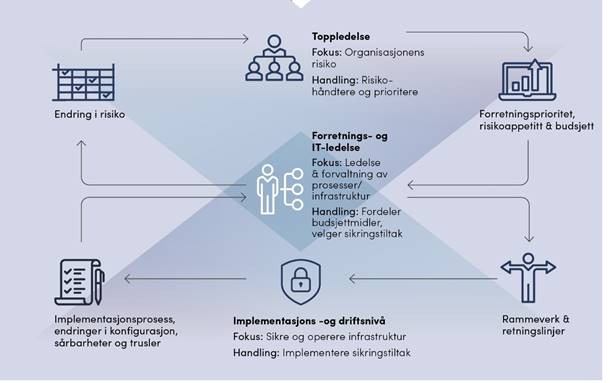
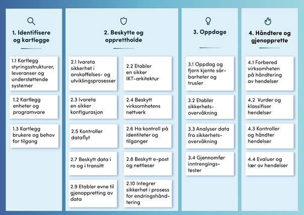

|
Versjon |
Dato |
Beskrivelse |
|
1.0 |
28. august 2017 |
Versjon 1.0 ferdigstilt |
|
1.1 |
1. november 2018 |
Versjon 1.1 ferdigstilt |
|
2.0 |
15. april 2020 |
Versjon 2.0 ferdigstilt |
Hva er NSMs grunnprinsipper for IKT-sikkerhet?
Andre relevante råd og anbefalinger
Bruk av tjenesteutsetting og skytjenester
1.1. Kartlegg styringsstrukturer, leveranser og understøttende systemer
1.2. Kartlegg enheter og programvare
1.3. Kartlegg brukere og behov for tilgang
2.1. Ivareta sikkerhet i anskaffelses- og utviklingsprosesser
2.2. Etabler en sikker IKT-arkitektur
2.3. Ivareta en sikker konfigurasjon
2.4. Beskytt virksomhetens nettverk
2.6. Ha kontroll på identiteter og tilganger
2.7. Beskytt data i ro og i transitt
2.8. Beskytt e-post og nettleser
2.9. Etabler evne til gjenoppretting av data
2.10. Integrer sikkerhet i prosess for endringshåndtering
3.1. Oppdag og fjern kjente sårbarheter og trusler
3.2. Etabler sikkerhetsovervåkning
3.3. Analyser data fra sikkerhetsovervåkning
3.4. Gjennomfør inntrengningstester
4.1. Forbered virksomheten på håndtering av hendelser
4.2. Vurder og klassifiser hendelser
4.3. Kontroller og håndter hendelser
4.4. Evaluer og lær av hendelser
NSMs grunnprinsipper for IKT-sikkerhet er et sett med prinsipper og tiltak for å beskytte informasjonssystemer mot uautorisert tilgang, skade eller misbruk. De er relevante for alle norske virksomheter.
Digitalisering skaper nye muligheter, men kan også øke risiko
Vi har et samfunn i konstant endring. Flere virksomheter tar i bruk ny teknologi og digitaliserer hele eller deler av prosessene sine. Endringer skjer stadig hurtigere og virksomheters IKT-portefølje består av både nye og gamle systemer som er basert på ulik teknologi og som må fungere sammen. Flere virksomheter tar i tillegg i bruk skytjenester som ofte driftes av flere ulike leverandører.
Økende bruk av digitale tjenester kan føre til enklere drift, bedre mobilitet, økt produktivitet og mer automatisert sikkerhet for virksomheter. Digitalisering kan samtidig føre til økende kompleksitet, flere verdier som eksponeres på offentlige, usikrede nett og lange digitale verdikjeder som det er vanskelig å ha oversikt over.
Mange virksomheter vet ikke hvor de skal starte
Hvordan skal virksomheter sørge for at kunnskap er oppdatert og teknologien relevant når informasjonssystemer utvikler seg hurtig, med tilsynelatende uendelig antall mulige løsninger? Hva er de mest kritiske områdene vi bør adressere, og hvor skal virksomheten starte? Hvordan kan vi sikre at vi starter i riktig ende, med de mest grunnleggende stegene, og sørge for at vi får på plass fundamentale prinsipper for å sikre, vedlikeholde, monitorere og forbedre IKT-systemene våre?
Det er ingen mangel på tilgjengelig informasjon om hvordan en virksomhet skal sikre sine informasjonssystemer. De må i tillegg forholde seg til ulike regelverk, bransjenormer og interne og eksterne leveransekrav. All denne informasjonen kan fort bli en jungel av konkurrerende muligheter og krav som distraherer beslutningstakere fra å ta riktige valg.
NSMs grunnprinsipper for IKT-sikkerhet vil være en hjelp i digitaliseringen
NSMs grunnprinsipper for IKT-sikkerhet er et sett med anbefalinger for hvordan virksomheter kan sikre sine informasjonssystemer. Hvilke anbefalinger som er relevante vil variere fra virksomhet til virksomhet. For store virksomheter vil de fleste tiltakene være relevante, mens mindre virksomheter i større grad må prioritere. Grunnprinsippene kan danne en basis for bransjenormer og kan utdype IKTanbefalinger i sektorregelverk. De kan benyttes i egen virksomhet og være til hjelp ved kjøp av IKTtjenester.
Produktet skal være levende og tidsaktuelt, og oppdateres jevnlig basert på innspill fra brukere og fagmiljøer fra offentlig og privat sektor.
Vi vil takke alle bidragsytere som har hjulpet til med utvikling, innspill og korrektur av NSMs grunnprinsipper for IKT-sikkerhet.
Hvilke virksomheter er grunnprinsippene relevante for?
NSMs grunnprinsipper for IKT-sikkerhet er utarbeidet i samarbeid med virksomheter som forvalter kritiske samfunnsfunksjoner og/eller kritisk infrastruktur. Dette er også hovedmålgruppen for prinsippene, men de er relevant for alle offentlige og private virksomheter. Dette gjelder både for virksomheter som forvalter informasjonssystemene selv og for virksomheter der en eller flere IKTtjenester forvaltes av en tredjepart. Grunnprinsippene er relevante uavhengig av om virksomheten er underlagt sikkerhetsloven eller ikke.
Hvilke roller i virksomheten er grunnprinsippene laget for?
I den enkelte virksomhet er forretnings- og IT-ledelsen ofte bindeleddet mellom toppledelse og implementasjons- og driftsnivå, som vist i Figur 1. De er hovedmålgruppen for NSMs grunnprinsipper. Det inkluderer systemeiere, sikkerhetsledere og forretnings- og prosesseiere. Under forklares de ulike nivåene og hvordan grunnprinsippene kan bidra til bedret informasjonsflyt om sikkerhetstilstanden i virksomheten.

Figur 1 - Informasjonsflyt i en virksomhet
Toppledelsen har fokus på organisatorisk risiko. De fastsetter forretningsprioritet, kommuniserer virksomhetens risikotoleranse og tildeler budsjettmidler til forretnings- og IT-ledelse. Det er avgjørende at toppledelsen tar eierskap til og involverer seg i sikkerhetsarbeidet i egen virksomhet. De ulike kategoriene og prinsippene i NSMs grunnprinsipper kan benyttes som styringsparameter i dette arbeidet.
Forretnings- og IT-ledelsen fastsetter retningslinjer for informasjonssikkerhet og fordeler budsjettmidler basert på ledelsens prioriteringer. Forretnings- og prosesseiere kjenner virksomhetens leveranser best og bør bidra i fastsettelsen av krav og retningslinjer. Hvert prinsipp i grunnprinsippene inneholder tiltak som beskriver hva en virksomhet bør gjøre for å sikre informasjonssystemer og verdier.
Forretnings- og IT-ledelsen må samtidig kommunisere et oppdatert status- og risikobilde til toppledelsen og forklare hvorfor tiltakene er nødvendige. Grunnprinsippene vil være til støtte i denne arbeidet fordi det beskrives hvorfor de ulike prinsippene er viktige.
Implementasjons- og driftsnivå etablerer og vedlikeholder sikkerhetstiltakene basert på ledelsens retningslinjer og valg. Denne gruppen kan benytte tiltakene i grunnprinsippene for å vurdere hva som kan og bør implementeres. Status og endringer for implementasjonen rapporteres oppover til ledelsen.
NSMs grunnprinsipper for IKT-sikkerhet er et sett med prinsipper og tiltak for å beskytte informasjonssystemer mot uautorisert tilgang, skade eller misbruk. De er et utvalg av de prinsippene og tiltakene som vi mener er mest relevante for norske virksomheter, men de omfatter ikke alle tenkelige tiltak. Utvelgelsen er gjort i samarbeid med norske offentlige og private virksomheter. Ved å implementere de anbefalte tiltakene vil virksomheter etablere et godt forsvar mot cybertrusler, men det er ingen garanti for at de ikke blir rammet.
Selv om vi anbefaler alle virksomheter å følge prinsippene betyr ikke det at virksomheten oppfyller sikkerhetsloven ved å følge dem. Men grunnprinsippene kan være en nyttig, første byggestein for IKTsystemer som er eller kan bli underlagt sikkerhetsloven. Grunnprinsippene fokuserer på teknologiske og organisatoriske tiltak. Tiltak som dekker fysisk sikkerhet og det menneskelige perspektiv omtales i liten grad. Tiltakene gjelder for både utilsiktede og tilsiktede handlinger, men hovedfokus er på tilsiktede handlinger.
Grunnprinsippene erstatter ikke en virksomhets sikkerhetsstyringsarbeid. Viktige suksessfaktorer for å lykkes med implementeringen er involvering fra ledelsen, IKT-sikkerhetskompetanse i virksomheten og etablerte styrings- og rapporteringslinjer, se Figur 1.
Valg av sikkerhetstiltak baseres på virksomhetens ordinære risikoarbeid, men grunnprinsippene kan hjelpe til med utvelgelsen. En virksomhet som ikke implementerer et anbefalt sikkerhetstiltak kan ha en økt risiko som må håndteres. Denne risikoen må vurderes opp mot virksomhetens risikotoleranse, i tillegg til krav i lovverk, bransjenormer og avtaler. Dersom risikoen ikke kan aksepteres, må kompenserende tiltak vurderes.

Figur 2 - Oversikt over NSMs grunnprinsipper for IKT-sikkerhet.
1. Identifisere og kartlegge – opparbeide og forvalte forståelse om virksomheten herunder styringsstrukturer, ledelsesprioriteringer, leveranser, IKT-systemer og brukere. Dette er grunnlaget for en effektiv implementering av de øvrige grunnprinsippene. Hensikten er å forstå virksomhetens leveranser og tjenester, få oversikt over hvilke teknologiske ressurser som må sikres og de roller og brukere virksomheten består av. Dette gjør det mulig å fokusere og prioritere sikkerhetstiltakene i tråd med forretningsbehov og strategi for risikostyring. Kategorien fokuserer også på å etablere prosesser for å forvalte kunnskapen over tid.
2. Beskytte og opprettholde – ivareta en forsvarlig sikring av IKT-systemet og opprettholde den sikre tilstanden over tid og ved endringer. Her finnes prinsippene for å etablere en sikker tilstand for IKTsystemet for å motstå eller begrense skaden fra dataangrep. Det innebærer å sikre hvordan IKTsystemet anskaffes, planlegges, bygges og konfigureres slik at ønsket sikkerhet oppnås.
3. Oppdage – oppdage og fjerne kjente sårbarheter og trusler og etablere sikkerhetsovervåking. Prinsippene i denne kategorien fokuserer på å oppdage og fjerne kjente sårbarheter og trusler gjennom sårbarhetskartlegging og overvåking av IKT-systemet. Kategorien tar også for seg å oppdage avvik fra ønsket, sikker tilstand, gjennom analyse av data fra sikkerhetsovervåking for å oppdage avvik fra normaltilstand.
4. Håndtere og gjenopprette – håndtere sikkerhetshendelser effektivt. Hensikten med disse prinsippene er å få på plass aktiviteter for å håndtere hendelser. Dette innebærer å forberede seg på, vurdere, kontrollere og håndtere hendelser, gjenopprette normaltilstand, samt forbedre sikkerheten basert på erfaringer fra hendelseshåndteringen.
Grunnprinsippene er delt inn i fire kategorier som vist i Figur 2. Et grunnprinsipp er for eksempel «Beskytt data i ro og i transitt» som er en del av kategorien «Beskytte og opprettholde». Hvert grunnprinsipp har tilknyttede sikkerhetstiltak som beskriver hva som bør gjøres. Hvert grunnprinsipp er en kontinuerlig aktivitet som må vurderes i hele informasjonssystemets levetid, fra planlegging og etablering til avhending. Flere av grunnprinsippene bygger på hverandre, og enkelte er en forutsetning for at andre skal kunne implementeres effektivt.
Oppbygning av hvert prinsipp:
• Grunnprinsippet (overskriften) – et anbefalt prinsipp som virksomheter bør følge.
• Mål med prinsippet – beskriver hva man skal oppnå ved å innføre grunnprinsippet.
• Hvorfor er dette viktig? – beskriver hvorfor grunnprinsippet er viktig og mulige konsekvenser dersom grunnprinsippet ikke er implementert.
• Anbefalte tiltak - beskriver sikkerhetstiltak en virksomhet bør gjøre for å følge grunnprinsippet.
• Utdypende informasjon – beskriver «kjekt-å-vite-informasjon» om prinsippet og lenker hvor man kan finne utdypende informasjon.
NSMs grunnprinsipper for IKT-sikkerhet er et supplement til eksisterende nasjonale og internasjonale regelverk, standarder og rammeverk innen IKT-sikkerhet og er inspirert av mange av disse. NSM har i tillegg et sett med tekniske råd og anbefalinger som understøtter grunnprinsippene. Eksempler er sjekklisten «Fire effektive tiltak mot dataangrep» (S-01[1]) og IT-veiledningen «Sikring av webtrafikk (HTTPS)» (U-15[2]). Grunnprinsippene er i tillegg koblet mot relevante sikkerhetstiltak i ISO/IEC 27002.
NSM vil også gi ut grunnprinsipper innen andre, relaterte fagområder. NSM gir i 2020 også ut grunnprinsipper for sikkerhetsstyring, personellsikkerhet og fysisk sikkerhet.
Det finnes en rekke relevante styringsrammeverk, tiltaksrammeverk og tekniske veiledere som kan benyttes sammen med NSMs grunnprinsipper. Under hvert grunnprinsipp er det listet opp relevante lenker som kan utdype eller supplere tiltakene.
Eksempler på styringsrammeverk og veiledninger er:
• NSMs veileder i sikkerhetsstyring – utarbeidet for virksomheter som er omfattet av sikkerhetsloven.
• Digitaliseringsdirektoratets internkontrollveileder – utarbeidet for virksomheter innen offentlig sektor.
• ISO/IEC 27001 – Internasjonal standard som beskriver et ledelsessystemer for informasjonssikkerhet.
• ITIL - Information Technology Infrastructure Library – et rammeverk for kvalitetssikring av leveranse, drift og support innen IT-sektoren.
Eksempler på tiltaksrammeverk er:
• ISO/IEC 27002
• CIS CSC Top 20 Security controls
• UK NCSC - Cyber Essentials og Cyber Assessment Framework
• NIST Cyber Security Framework
• NIST SP 800-53 - Security and Privacy Controls for Information Systems and Organizations Australian Government Information Security Manual (ISM).
Lesere bør være kjent med følgende begreper som benyttes i NSMs grunnprinsipper for IKT-sikkerhet:
• Enhet – For eksempel en klient, en server, en skriver, en sensor (f.eks. IoT-enhet) eller nettverksutstyr. Enheter kan være fysiske gjenstander, eller de kan være virtuelle enheter.
Noen underkategorier av enheter benyttet i denne teksten er:
- Forvaltede enheter – Enheter som kontrolleres og driftes av virksomheten. Hvis det er en klient så bør ikke brukeren kunne endre sikkerhetskonfigurasjonen.
- Ikke-forvaltede enheter – Enheter som ikke er kontrollert av virksomheten. Det kan være private enheter («Bring Your Own Device» - BYOD), IoT-enheter, enheter delt ut av virksomheten, eller enheter til besøkende. Ikke-forvaltede enheter bør kun ha tilgang til en begrenset del av virksomhetens infrastruktur.
- Mobile enheter – Alle flyttbare enheter (primært klienter), som benyttes både innenfor og utenfor virksomhetens lokaler.
- Klient – En datamaskin som benyttes av sluttbrukere, for eksempel en «PC», «MAC», mobiltelefon, nettbrett eller virtuell klient («Virtual Desktop»).
- Server/Tjener – En datamaskin som typisk kjører i et datarom eller datasenter og som kjører applikasjoner eller infrastruktur-tjenester. En server kan være både fysisk og virtuell. De fleste moderne fysiske servere kjører en «hypervisor» som er en plattform for virtuelle servere og/eller «containere».
- Virtuelle enheter – Enheter som er virtuelle, og ikke fysiske. Det kan være: virtuelle servere, virtuelle klienter (desktops) og virtuelle nettverkskomponenter (f.eks. virtuelle svitsjer).
• Hvitelisting – Er et prinsipp hvor man spesifiser hvilke handlinger/hendelser som er tillatt. Handlinger/hendelser som ikke er eksplisitt tillatt blir automatisk sperret. Typisk er det mindre og enklere arbeid å liste opp handlinger/hendelser som er tillatt enn alle de handlinger/hendelser som ikke er tillatt. Sistnevnte kalles for «svartelisteprinsippet».
• IaaS/PaaS/SaaS – Begreper som beskriver forskjellige modeller for virksomhetens egne eller innkjøpte virtualiseringstjenester. De mest vanlige modellene er Infrastructure as a Service (IaaS), Platform as a Service (PaaS) og Software as a Service (SaaS).
• IKT-system – Maskinvare, programvare og tilknyttet infrastruktur.
• Informasjonssystem – IKT-system, data og tjenestene det tilbyr, bruken av dette, samt menneskers interaksjon med IKT-systemet for å støtte opp under virksomhetsprosesser.
• Sikkerhetshendelse – En avvikssituasjon hvor det er et potensiale for tap av konfidensialitet, integritet, og/eller tilgjengelighet for informasjon eller IKT-tjenester. En sikkerhetshendelse kan oppstå som følge av et dataangrep, teknisk svikt, eller utilsiktede feilhandlinger.
• Sikker tilstand – Er det virksomhetsbestemte normalnivå for sikkerhet i virksomheten.
Kategori 2 - Beskytte og opprettholde beskriver en mulig oppbygging av en sikker tilstand.
• Sårbarheter – En sårbarhet i et IKT-system slik det er omtalt i disse grunnprinsippene kan være alt som kan utnyttes av en angriper, og kan være både organisatoriske og tekniske. Eksempler er manglende oppdeling av nettverket, manglende kontroll på hvilken programvare brukere kan kjøre, mangelfull tilgangsstyring og manglende sikkerhetsoppdatering av enheter.
Summen av alle sårbarheter omtales ofte som den mulige angrepsflaten («attack surface»). Menneskelige og fysiske sårbarheter må også vurderes, men omtales i liten grad i grunnprinsipper for IKT-sikkerhet.
Offentlige og private virksomheter ser på IKT og bruken av IKT som en viktig del av virksomheten og realisering av sin strategi. Samtidig øker kostnader, ressursbruk og den generelle avhengigheten til leveranse av IKT-tjenester. Det er derfor et økende fokus på hvordan IKT-området utvikles og hvordan IKT-tjenestene kan leveres. For mange er konklusjonen å tjenesteutsette hele eller deler av tjenesteporteføljen til en eller flere leverandører. Med tjenesteutsetting menes her at virksomheten velger å anskaffe «varer eller tjenester» fra en ekstern leverandør i stedet for å levere dem selv. Et eksempel på tjenesteutsetting er anskaffelse av skybaserte tjenester. Sikkerhetstiltak er nødvendig, uavhengig av hvem som forvalter tjenestene. NSMs grunnprinsipper for IKT-sikkerhet er like relevante for IKT-tjenester som er tjenesteutsatt som for IKT-tjenester som forvaltes av virksomheten selv.
Forskjellen er om man stiller krav til interne eller eksterne tjenesteleverandører.
Før det foretas en strategisk beslutning om bruk av tjenesteutsetting, bør virksomheten vurdere om den er «rigget» for å håndtere alle faser i en tjenesteutsettingsprosess. For å ivareta IKT-sikkerheten ved tjenesteutsetting anbefales:
1) Oversikt og kontroll på hele livsløpet
2) God bestillerkompetanse
3) Gode risikovurderinger for å kunne ta riktig beslutning
4) Riktige og gode krav til IKT-tjenesten og til leverandør
5) Riktig beslutning på riktig nivå
Det man ikke får gjort i forkant av tjenesteutsettingen kan bli utfordrende å få gjennomført senere i kontraktens varighet.
Se prinsipp 2.1 - Ivareta sikkerhet i anskaffelses- og utviklingsprosesser og les NSMs rapporter[3] om tjenesteutsetting for mer informasjon om tjenesteutsetting og «sky».
Målet med prinsippet: Virksomheten identifiserer strukturer og prosesser for sikkerhets- og risikostyring for å styre arbeidet med sikring av IKT-systemene. Virksomheten kartlegger leveranser, informasjonssystemer og understøttende funksjoner og vurderer dette opp imot fastsatte toleransegrenser for risiko for å etablere og justere sikkerhetstiltak
Hvorfor er dette viktig?
Manglende styringsstrukturer og prosesser for risikovurdering kan føre til at ledelsen ikke får tilstrekkelig informasjon til å prioritere og styre virksomhetens sikkerhetsarbeid.
Virksomhetens informasjonssystemer skal støtte opp under virksomhetens aktiviteter og leveranser slik at disse blir gjennomført i henhold til avtalt kvalitet. Virksomheten må identifisere, prioritere og beskytte sine viktigste leveranser. Ved manglende oversikt kan enkelte, mindre viktige deler av IKTsystemet være godt sikret, mens andre vitale deler er eksponert og sårbart for angrep. Både tilgjengelighet, integritet og konfidensialitet for informasjonssystemer og data må vurderes i virksomhetens sikkerhetsarbeid.
|
ID |
Beskrivelse |
|
1.1.1 |
Identifiser virksomhetens strategi og prioriterte mål, samt regelverk, bransjenormer og avtaler som kan ha innvirkning på sikring av informasjonssystemer. |
|
1.1.2 |
Identifiser virksomhetens strukturer og prosesser for sikkerhetsstyring. Dette inkluderer normalt a) policyer fra ledelsen, b) ledelsesstruktur med veldefinert ansvar og ansvarslinjer, c) prosesser for risikostyring (se 1.1.3) d) fastsatte toleransegrenser for risiko (se 1.1.4), e) tilføring av tilstrekkelige ressurser og fagkompetanse for å støtte ledelsen i arbeidet.
f) Etabler strukturer og prosesser for sikkerhetsstyring dersom dette mangler. Sørg for at det tilpasses virksomheten og er en inkludert del av virksomhetsstyringen. Se «Utdypende informasjon» for ytterligere informasjon. |
|
1.1.3 |
Identifiser virksomhetens prosesser for risikostyring knyttet til IKT. Dette inkluderer normalt a) verdivurdering, b) trusselvurdering, c) kartlegge eksisterende sikkerhetstiltak, d) risikoidentifisering, e) risikovurdering, f) risikorapportering, g) risikohåndtering, h) etablere eller |
|
|
justere sikkerhetstiltak for å redusere risiko g) verifisere at sikkerhetstiltakene fungerer etter hensikt.
h) Etabler prosesser for risikostyring dersom dette mangler. Sørg for at prosessene tilpasses virksomheten og er en inkludert del av virksomhetsstyringen og sikkerhetsstyringen. Se «Utdypende informasjon» for ytterligere informasjon. |
|
1.1.4 |
Identifiser virksomhetens toleransegrenser for risiko knyttet til IKT. Ledelsen må fastsette hvilke grenser for risiko virksomheten aksepterer og hva som er uakseptabel risiko. Dette må kommuniseres på tvers i organisasjonen. Det er vanlig å fastsette risikogrenser basert på konsekvens for virksomheten ved tap av konfidensialitet, integritet og tilgjengelighet for informasjon og informasjonssystemer. Se 4.1.1, 4.1.2 og «Utdypende informasjon» for ytterligere informasjon. |
|
1.1.5 |
Kartlegg virksomhetens leveranser, informasjonssystemer og understøttende IKT-funksjoner. Kartlegg a) IKT-systemer, data og tjenester, inkludert eierskap, b) kritiske forretningsroller og c) interne og eksterne IKT-avhengigheter. d) Gruppér i henhold til virksomhetens risikoaksept (1.1.4) og bruk resultatet som grunnlag for etablering av en sikker IKT-arkitektur, se prinsipp 2.2 - Etabler en sikker IKT-arkitektur. |
|
1.1.6 |
Kartlegg informasjonsbehandling og dataflyt i virksomheten. Kartlegg informasjonsflyt mellom arbeidsprosesser, brukere, enheter og tjenester og bruk resultatet som grunnlag for etablering av en sikker IKT-arkitektur, se prinsipp 2.2 - Etabler en sikker IKT-arkitektur. |
Tilpass sikkerhetsstyringen til din virksomhet.
Prosesser for sikkerhets- og risikostyring må tilpasses virksomheten. Større virksomheter med mange ansatte kan ha en omfattende styringsstruktur med en rekke definerte prosesser på ulike nivåer og mange personer som jobber spesifikt med dette. Mindre virksomheter har ofte en enklere styringsstruktur og mindre omfattende prosesser. NSM gir ut grunnprinsipper for sikkerhetsstyring i 2020. De vil være til hjelp i arbeidet med å få på plass sikkerhetsstyring i virksomheter.
Velg riktig metode for risikovurdering i din virksomhet.
Det finnes en rekke ulike teknikker for å identifisere og vurdere risiko for en virksomhet. Det er viktig at din virksomhet velger en metode som gjør risikovurderingen overkommelig slik at de viktigste risikoene blir identifisert, diskutert og håndtert. Eksempler på ulike metoder/rammeverk er ISO/IEC 27005[10], NIST SP 800-30[11], Octave Allegro[12] og COBIT 5 for Risk[13].
Kartlegging av leveranser og tjenester vil bidra til at viktige verdikjeder, informasjon og avhengigheter blir identifisert og vurdert. Dette benyttes som utgangspunkt ved beskyttelse og vedlikehold av IKTsystemet, eksempelvis i forbindelse med sikkerhetsarkitektur, soneinndeling, tilgangsstyring, sikker konfigurasjon, logging og sikkerhetsovervåkning.
Velg riktige tiltak basert på identifisert risiko.
Resultatet av risikovurderinger er ofte en rekke sikkerhetstiltak som må tilpasses eller etableres. Det er viktig å identifisere eksisterende sikkerhetstiltak og vurdere effekt og effektivitet av disse opp imot verdiene de skal beskytte. Det er samtidig viktig å se ulike typer sikkerhetstiltak i sammenheng når man justerer eller etablerer sikkerhetstiltak. Ulike standarder og rammeverk har noe ulik inndeling av typer sikkerhetstiltak. Grunnprinsipper for IKT-sikkerhet fokuserer hovedsakelig på organisatoriske og teknologiske tiltak. NSM gir ut grunnprinsipper for fysisk sikkerhet og personellsikkerhet i 2020. Disse vil være til hjelp ved valg av ytterligere ikke-teknologiske sikkerhetstiltak.
Det finnes mange eksempler på sikkerhetstiltak som er implementert rundt mindre viktige verdier i en virksomhet. Viktige verdier er samtidig utelatt eller glemt fordi det ikke er lagt til grunn en helhetstankegang ved valg av tiltak. I verste fall kan sikkerhetstiltakene virke mot sin hensikt.
«Sikkerhetstiltakene er riktig implementert, men er de riktige tiltakene implementert på rett sted?» Lenker
[1] NSMs veileder i sikkerhetsstyring:
https://www.nsm.stat.no/globalassets/dokumenter/veiledninger/2019/veileder-isikkerhetsstyring.pdf
[2] NSMs håndbok: Risikovurdering for sikring: https://www.nsm.stat.no/publikasjoner/andre-publikasjoner/risikovurdering-handbok [3] Digitaliseringsdirektoratets internkontrollveileder:
https://internkontroll-infosikkerhet.difi.no
[4] DSB (Olav Lysne) - Risikostyring i digitale verdikjeder: https://www.dsb.no/rapporter-ogevalueringer/risikostyring-i-digitale-verdikjeder/
[5] NCSC UK Cyber Assessment Framework - A.1 Governance: https://www.ncsc.gov.uk/collection/caf
[6] NCSC UK Cyber Assessment Framework - A.2 Risk Management:
https://www.ncsc.gov.uk/collection/caf [7] UK GOV – Supply Chain security:
https://www.ncsc.gov.uk/collection/supply-chain-security
[8] NCSC UK Cyber Assessment Framework – A4.Supply Chain: https://www.ncsc.gov.uk/collection/caf
[9] ISO/IEC 27001- Information security management systems: https://www.iso.org/isoiec-27001-information-security.html [10] ISO/IEC 27005 – Information security risk management: https://www.iso.org/standard/75281.html
[11] NIST SP 800-30 - Guide for Conducting Risk Assessments:
https://www.nist.gov/privacy-framework/nist-sp-800-30
[12] Octave Allegro – Operationally Critical Threat, Asset, and Vulnerability Evaluation methodology:
https://www.cert.org/resilience/products-services/octave/index.cfm [13] ISACA COBIT 5 for Risk:
https://www.isaca.org/COBIT/Pages/Risk-product-page.aspx
Målet med prinsippet: Virksomheten kartlegger enheter og programvare på nettverket og har oversikt over forvaltede (og ikke-forvaltede) enheter og gjeldende konfigurasjon for disse.
Hvorfor er dette viktig?
Kartlegging av enheter og programvare er viktig for å få oversikt over hva som befinner seg i virksomheten. Kartleggingen av enheter bør avdekke både virksomhetsstyrte enheter, legitime enheter med begrensede rettigheter (for eksempel IoT-enheter) og ukjente enheter (kan være f.eks. ansattes privat utstyr eller ondsinnede enheter). Tilsvarende bør kartlegging av programvare dekke all programvare som benyttes i virksomheten, både installert av IT-avdelingen og uautorisert programvare. Det er viktig at virksomheten selv får oversikt over enheter, programvare og deres sårbarheter før angripere gjør det.
|
ID |
Beskrivelse |
|
1.2.1 |
Etabler en prosess for å kartlegge enheter og programvare som er i bruk i virksomheten. Benytt fortrinnsvis automatiserte og sentraliserte verktøy til å oppdage og holde oversikt over enheter og programvare, og vise hvilke programvare som er på hvilke enheter. Oversikten bør også inkludere eierskap, eldre ikke-støttede produkter (bør merkes eksplisitt), samt enheter og programvare som ikke er koblet til virksomhetens nettverk (f.eks. USB-enheter). Dette utdypes i 1.2.3 (enheter) og 1.2.4 (programvare). |
|
1.2.2 |
Fastsett retningslinjer for godkjente enheter og programvare i virksomheten. a) Virksomheten bør f.eks. avgjøre i) hva slags enheter og programvare som ansatte har behov for, ii) hva som det ikke er tjenstlig behov for men likevel lov, iii) hva som er uønsket og iv) hvordan dette skal håndteres i virksomheten. b) Utarbeid og vedlikehold en oversikt over enheter og programvare godkjent for bruk i virksomheten (inkludert hvis hensiktsmessig versjonsnummer). Vurder behov opp imot anbefalte tiltak i prinsipp 2.1-2.3. c) Kommuniser retningslinjene til ansatte. Beskriv formål og lovlig bruk av enheter og programvare. |
|
1.2.3 |
Kartlegg enheter i bruk i virksomheten iht. prosess i 1.2.1. a) Kartlegg informasjon etter en hensiktsmessig vurdering, for eksempel nettverksadresse, maskinvareadresse, enhetsnavn, avdelingstilknytning, samt om enhetene er forvaltet av virksomheten. Hver enhet som har en IPadresse på nettverket bør være med i oversikten, inkludert stasjonære og bærbare datamaskiner, servere, nettverksutstyr (rutere, svitsjer, brannmurer, osv.), skrivere, lagringsnettverk, IPtelefoner, IoT-enheter, osv. b) Få oversikt over alle mobile enheter og lagringsmedier som benyttes utenfor virksomhetens nett som inneholder virksomhetsinformasjon. c) Lag en plan for håndtering av enheter som ikke er godkjent for bruk i virksomheten (se 1.2.2). For håndtering se 2.4.1.b. d) Virksomheten bør også ha oversikt over virtuelle enheter (enten de kjører hos virksomheten eller i en leverandørs «sky»). I mange tilfeller bør oversikten da være litt overordnet hvis «levetid» på virtuelle enheter er variabel/dynamisk, f.eks. «stateless» «Virtual Desktops». Oversikt over virtuelle enheter som kjører hos en leverandør er primært kun hensiktsmessig ifm. kjøp av «IaaS». |
|
|
Ved mest mulig konsekvent bruk av hvitelisting av alle enheter (og/eller alle kablede og trådløse nettverksforbindelser) i virksomhetens nettverk kan kartlegging av enheter bli enklere enn beskrevet over. Se og prinsipp 2.4 - Beskytt virksomhetens nettverk. |
|
1.2.4 |
Kartlegg programvare i bruk i virksomheten iht. prosess i 1.2.1. a) Kartlegg firmware, operativsystem og applikasjoner (navn, versjonsnummer, produsent, installasjonsdato, om den støttes lengre) som er installert på servere, klienter og nettverksutstyr med mer. b) Lag en plan for håndtering av programvare som skal godkjennes for bruk i virksomheten (se 1.2.2).
Ved mest mulig konsekvent bruk av hvitelisting (spesielt mht. klienter) av alle applikasjoner (alternativt bruk av applikasjonsbutikker) kan kartlegging av programvare gjøres enklere enn beskrevet over. |
Angripere er kontinuerlig på jakt etter nye og ubeskyttede systemer og sårbare versjoner av programvare. Angriperne ser også etter enheter (spesielt mobile enheter) som kobles til og fra virksomhetens nettverk og mangler sikkerhetsoppdateringer og tilstrekkelig sikkerhetskonfigurasjon. Selv enheter som ikke er synlige fra Internett kan utnyttes av angripere som allerede har fått intern tilgang og er på jakt etter sårbare mål. Etter hvert som ny teknologi dukker opp har ikke-forvaltede enheter blitt vanlig der virksomheten tillater at ansatte bruker egne mobile enheter. Mange virksomheter har liten eller ingen kontroll på sikkerhetstilstanden til disse enhetene, og små muligheter til sikkerhetsovervåkning. De kan bli, eller er allerede kompromittert og benyttes til å angripe interne ressurser.
Svakt forvaltede eller ikke-forvaltede enheter vil ha større sannsynlighet for å kjøre uønsket programvare eller skadevare. En trusselaktør ønsker som regel å tilegne seg størst mulig tilganger og rettigheter i et IKT-system for å få tilgang på informasjon og ressurser. En måte å gjøre dette på er ved å hacke seg inn på en sårbar enhet og benytte denne som et utgangspunkt for å samle informasjon fra det kompromitterte systemet og fra andre enheter og systemer som enheten kan kommunisere med. Kompromitterte enheter kan benyttes som et utgangspunkt for bevegelse rundt i hele nettverket samt tilknyttede nettverk. Én kompromittert maskin blir raskt til mange. Virksomheter som ikke har en komplett oversikt over hvilken programvare som kjører og skal kjøre i nettverket vet ikke om systemer kjører sårbar eller skadelig programvare.
I praksis kan det være utfordrende for virksomheter å ha full kontroll på hele IKT-infrastrukturen. I valget mellom sikkerhet og behov for leveranser vil virksomheter ofte måtte godta enheter med lavere sikkerhetsnivå enn ønsket. Det avgjørende er at virksomheter er bevisst de strategier som velges og vurderer de funksjonelle behovene opp mot risikobildet. I en del tilfeller vil ikke virksomheten ha kontroll på en gitt type utstyr, for eksempel ved eksterne leverandører eller ved å tillate bruk av ikkeforvaltede enheter. Virksomheten må være bevisst sikkerhetsutfordringene det medfører og vurdere kompenserende tiltak som for eksempel forsterket deteksjonsevne, segregering og lavere eksponering av verdifull informasjon og IKT-systemer.
[1] NCSC UK Cyber Assessment Framework – A3. Asset management:
https://www.ncsc.gov.uk/collection/caf/caf-principles-and-guidance/a-3-asset-management [2] CIS CSC 1 - Inventory and Control of Hardware Assets: https://www.cisecurity.org/controls/cis-controls-list/
[3] CIS CSC 2 - Inventory and Control of Software Assets:
https://www.cisecurity.org/controls/cis-controls-list/
Målet med prinsippet: Virksomheten har oversikt over hvilke brukergrupper, brukere og tilgangsbehov som finnes i virksomheten og har kartlagt ansvar for IKT-sikkerhet.
Hvorfor er dette viktig?
Når en angriper får tilgang til et informasjonssystem er ofte det første målet å øke tilgangen. Dette gjøres gjerne ved å ta over ulike kontoer og forsøke å eskalere rettigheter. Mange brukere kan ha tilgang til systemer og tjenester de ikke har behov for, og med mer rettigheter enn de trenger for å gjøre jobben sin. Hvis alle brukere har tilgang til for mye vil kompromittering av én bruker kunne kompromittere hele IKT-systemet. Tilgangen til de ulike delene av et informasjonssystem bør derfor deles opp for å redusere skaden fra en kompromittering eller utro ansatte. En virksomhet må derfor ha kontroll på de ulike brukerne, kontoene de disponerer og hvilke rettigheter en gitt konto har.
|
ID |
Beskrivelse |
|
Dette prinsippet leses sammen med prinsipp 2.6 - Ha kontroll på identiteter og tilganger |
|
|
1.3.1 |
Kartlegg brukere i informasjonssystemene, inkludert: a) brukeridentitet, b) arbeidslokasjon(er) c) tilgangsbehov til IKT-systemer, tjenester/applikasjoner d) spesielle rettighetsbehov, se 1.3.2. Se og prinsipp 2.2 - Etabler en sikker IKT-arkitektur og 2.6 - Ha kontroll på identiteter og tilganger. |
|
1.3.2 |
Kartlegg og definer de ulike brukerkategoriene som finnes i virksomheten for å definere tilgangsnivåer og behov for oppfølging og kontroll. Eksempler på brukerkategorier kan være: • Normale brukere som kun har behov for kontorstøtte. • Brukere med spesialbehov, med behov for utvidede rettigheter, f.eks. utviklere. • Brukere som drifter virksomhetens systemer. • Leverandører og konsulenter. Systembrukere, f.eks. systemprosesser som sikkerhetskopiering og lignende som går i bakgrunnen. |
|
1.3.3 |
Kartlegg ansvar og roller spesielt knyttet til IKT-sikkerhet. a) Dette gjelder ansvar internt i virksomheten: f.eks. sikkerhetssjef, IT-sjef, applikasjonsansvarlig, plattformansvarlig mm. b) Klargjør hvem som skal kontaktes ved hendelser. Se 4.1.1 og 4.1.3. c) Kartlegg roller og oppgaver som innehas av eksterne leverandører og partnere. |
Utilsiktet tilgang til informasjon eller tjenester kan fås både gjennom bevisste og ubevisste handlinger.
Dette kan blant annet påføre virksomheten økonomiske tap.
En bevisst handling kan være en ansatt (omtales ofte som en «insider») som utnytter sine rettigheter for egen eller andres vinning, for eksempel ved å lese dokumenter vedkommende vanligvis ikke har tilgang til. En bevisst handling kan også utføres av en ekstern angriper som eksempelvis klarer å ta over kontoen til en bruker.
En ubevisst handling kan skyldes at en ansatt ved et uhell eller ved uforstand eksempelvis endrer på sikkerhetsinnstillinger, sletter informasjon eller åpner en epost med skadevare.
[1] NSM - Temarapport – innsiderisiko https://www.nsm.stat.no/globalassets/rapporter/nsm_temarapport_innsidere_2019_ny_lr.pdf [2] UK GOV - Cyber Assessment Framework – B2.Identity and access control:
https://www.ncsc.gov.uk/collection/caf
[3] CIS CSC 14 - Controlled Access Based on the Need to Know:
https://www.cisecurity.org/controls/controlled-access-based-on-the-need-to-know
Målet med prinsippet: Sikkerhet er en integrert del av prosessene for anskaffelse og utvikling og virksomheten minimerer risiko for at nye IKT-produkter og IKT-tjenester innfører konfigurasjonsmessige og arkitekturmessige sårbarheter.
Hvorfor er dette viktig?
IKT-sikkerhet er viktig i alle IKT-produkter og IKT-tjenester, ikke kun ved anskaffelse av rene sikkerhetsprodukter som en brannmur. Dersom en virksomhet anskaffer IKT-produkter og IKTtjenester som har svak sikkerhet eller som ikke integrerer godt med virksomhetens øvrig sikkerhetsarkitektur og eksisterende IKT-produkter, kan dette øke sårbarheten og redusere sikkerhetsnivået i IKT-systemet.
Dersom virksomheten mangler gode prosesser for utvikling, test, verifisering og implementering vil sannsynligheten være stor for at sårbarhetene ikke blir oppdaget. Kostnaden ved å rette opp i dette i etterkant er ofte høyere enn kostnaden ved gode forberedelser.
|
ID |
Beskrivelse |
|
|
Anskaffelse av IKT-produkter |
|
2.1.1 |
Integrer sikkerhet i virksomhetens prosess for anskaffelser. Fastsett krav til IKT-sikkerhet ved anskaffelse av alle IKT-produkter og IKT-tjenester, se prinsipp 2.2 - Etabler en sikker IKT-arkitektur. Inkluder sikkerhet i hele livsløpet fra anskaffelse til avhending. |
|
2.1.2 |
Kjøp moderne og oppdatert maskin- og programvare slik at nyere sikkerhetsfunksjonalitet er innebygd. Sørg for a) å kun benytte IKT-produkter som støttes og mottar sikkerhetsoppdateringer fra leverandør b) å kun anskaffe IKT-produkter som inneholder nyere sikkerhetsfunksjonalitet og protokoller og c) at eldre IKT-produkter fases ut. d) Der det er hensiktsmessig bør man be leverandør (som kjenner IKT-produktet best) i) å informere om risikoer og sårbarheter produktet kan utsettes for og ii) spesifisere nærmere hvordan IKT-produktet kan sikkerhetsherdes og beskyttes. |
|
2.1.3 |
Foretrekk IKT-produkter som er sertifiserte og evaluert av en tiltrodd tredjepart. Et eksempel på et sertifiseringsregime er Common Criteria[4]. |
|
2.1.4 |
Reduser risiko for målrettet manipulasjon av IKT-produkter i leverandørkjeden. a) Virksomheter bør vurdere risiko for om de kan bli utsatt for slike målrettede angrep. b) Be nasjonale forhandlere/importører vise diskresjon, og ikke videreformidle for mye kundeinformasjon, f.eks. kundenavn, hvordan produktet skal benyttes, hvem som skal benytte produktet, hvor produktet skal benyttes. c) Beskytt produktintegritet til fysiske produkter (i dialog med nasjonale forhandlere/importører) så tidlig som mulig i leverandørkjeden. Produkter bør inspiseres av alle nasjonale ledd (også hos kunden før produksjonssetting) for brutte forseglinger og oppbevares slik at kun et begrenset sett av personell har fysisk adgang. d) Programvare-produkter bør kun lastes ned fra leverandørens offisielle webside (kun via https). Virksomheten bør oppbevare all installasjonsprogramvare i fil-mapper hvor kun installasjonsansvarlig har skriverettigheter. e) Leverandørers fysiske adgang ifm. vedlikehold av IKT-produkter bør reguleres og kontrolleres. |
|
|
Utvikling og test mht. egen programvareutvikling |
|
2.1.5 |
Benytt en metode for sikker utvikling av programvare for å redusere sårbarhetene i programvaren. Dette inkluderer: a) Hensiktsmessig planlegging, inkludert virksomhetens behov, rammebetingelser, IKT-sikkerhets hensyn og behov for opplæring av personell. b) Analyse av brukerbehov, inkludert IKT-sikkerhetskrav. c) Design av programvare basert på fastsatte krav, d) Utvikling av programvaren, inkludert sikker koding og testing (se 2.1.6 og 2.1.7). e) Implementasjon og idriftsetting av programvaren. f) Sikkerhetsmessig forvaltning av programvaren, bl.a. i) planlegge for gjennomføring og distribusjon av sikkerhetsoppdateringer og ii) planlegge støtte for nyere og mer tidsriktig sikkerhetsfunksjonalitet. |
|
2.1.6 |
Benytt separate miljøer for utvikling, test og produksjon slik at operative virksomhetsprosesser og data ikke blir påvirket ved feil i utviklings- og testløp. Vurder også soneinndeling som beskrevet i tiltak 2.2.3. Sensitive produksjonsdata bør bare benyttes på utviklings- og testmiljø som er sikret. |
|
2.1.7 |
Gjennomfør tilstrekkelig med testing gjennom hele utviklingsprosessen. Gjør dette slik at feil, sårbarheter og mangler rettes opp før idriftsetting. a) Dette inkluderer test av at sikkerhetsfunksjonalitet fra forskjellige berørte IKT-produkter fungerer godt sammen, ref. prinsipp 2.2 - Etabler en sikker IKT-arkitektur, samt enhetstesting, integrasjonstesting, systemtest, akseptansetest, pilottest, inntrengingstest(prinsipp 0) og stresstest. b) Utfør kontroll på at kun tillate handlinger virker samt stikkprøver på at andre handlinger blir avvist. |
|
2.1.8 |
Vedlikehold programvarekode som utvikles/benyttes i virksomheten. a) Ha en utviklingsprosess som inneholder metodisk sikkerhetsvurdering av koden. b) Vær spesielt oppmerksom på kode som har spesiell betydning for sikkerheten, f.eks. kode for i) tilgangskontroll, ii) kryptering av trafikk, iii) logging, iv) «parsing» av bruker-input, v) «buffer overflow», med mer. Se [2] og [9]. c) Ved bruk av offentlig tilgjengelig kode («open source») og kommersielle «toolkits» bør virksomheten regelmessig (fortrinnsvis automatisk) sjekke for nye versjoner. d) Ved bruk av DevOps/DevSecOps bør også sikkerhetssjekk av egen kode automatiseres der det er hensiktsmessig. Spesielt sikkerhetsrelevant kode (ref. forrige punkt) bør kvalitetssikres. |
|
|
Tjenesteutsetting – herunder bruk av skytjenester |
|
2.1.9 |
Ta ansvar for virksomhetens sikkerhet også ved tjenesteutsetting. Dette inkluderer å a) ha oversikt og kontroll på hele livsløpet til tjenesten(e) som skal settes ut, b) ivareta behovet for bestillerkompetanse (f.eks. forvaltning-, administrasjon- og ITarkitekturkompetanse) gjennom hele livsløpet til tjenesteutsettingen c) gjennomføre gode risikovurderinger som inkluderer IKT og hensyntar hele livsløpet, d) utarbeide et kravdokument for alle faser av tjenesteutsettingen hvor krav kan verifiseres, e) avtaler om tjenesteutsetting av IKT-tjenester og endringer i slike avtaler skal behandles i henhold til virksomhetens fullmaktsstruktur. |
|
|
Se også kapittel I - Bruk av tjenesteutsetting og skytjenester og [1].
Det understrekes at virksomhetens ansvar for sikkerheten ikke forsvinner selv om man tjenesteutsetter. Virksomheten har et ansvar uavhengig av hvem som utfører de forskjellige oppgavene. |
|
2.1.10 |
Undersøk sikkerheten hos tjenesteleverandør ved tjenesteutsetting. Det bør som minimum undersøkes om leverandøren: a) har et etablert styringssystem for informasjonssikkerhet og eventuelt sertifisering i henhold til internasjonale standarder, for eksempel ISO/IEC 27001:2017. b) gir innsyn i sikkerhetsarkitekturen som benyttes for å levere tjenesten. c) har utviklingsplaner for fremtidig sikkerhetsfunksjonalitet i tjenestene i tråd med utvikling i teknologi og trusselbildet over tid. d) har en oversikt over hvem som skal ha innsyn i virksomhetens informasjon, hvor og hvordan denne skal behandles og lagres samt grad av mekanismer for segregering fra andre kunder. e) har sikkerhetsfunksjonalitet som tilfredsstiller virksomhetens behov. f) har sikkerhetsovervåkning for å avdekke sikkerhetshendelser som kan påvirke virksomheten. g) har rutiner for hendelseshåndtering og avviks- og sikkerhetsrapportering. h) har krise- og beredskapsplaner som skal harmonisere med virksomhetens egne planer. i) har godkjenningsprosedyrer for bruk av underleverandører og deres bruk av underleverandører. j) har spesifisert hvilke aktiviteter som skal utføres ved terminering av kontrakten, blant annet tilbakeføring/flytting/sletting av virksomhetens informasjon.
Les mer i NSMs rapporter om tjenesteutsetting, se [1]. |
DevOps/DevSecOps er begreper som er blitt stadig mer aktuelt ifm. utvikling av programvare, kanskje spesielt i forbindelse med tjenester. I korthet går det ut på å utføre kodeendringer som påføres et system i produksjon relativt raskt uten tradisjonelle prosesser med adskillelse som nevnt i 2.1.6. Av navnet ser man at det tradisjonelle skillet på utvikling («Development») og drift («Operations») viskes ut, ofte også organisatorisk. Dersom virksomheten benytter DevOps bør man være ekstra påpasselig med at det ikke innføres sårbarheter som kan påvirke forretningsprosesser. Akkurat som utvikling og drift blir mer automatisert, så bør sikkerhetsprosedyrene for å identifisere programvarekode med sårbarheter også i økende grad automatiseres. Som minimum bør man være mer grundig med kode som har spesiell betydning for sikkerheten.
[1] NSM – Temarapport om tjenesteutsetting:
https://www.nsm.stat.no/aktuelt/tjenesteutsetting-landvurderinger[2] Datatilsynet – Programvareutvikling med innebygd personvern:
https://www.datatilsynet.no/regelverk-og-verktoy/veiledere/programvareutvikling-medinnebygd-personvern
Fagsider om offentlige anskaffelser: https://www.anskaffelser.no
[4] Veileder om ivaretakelse av sikkerhet i offentlige anskaffelser:
https://www.regjeringen.no/no/dokumenter/veileder-om-ivaretakelse-av-sikkerhet-i-offentligeanskaffelser/id2678434
[5] UK GOV: https://www.ncsc.gov.uk/collection/developers-collection
[6] UK GOV: https://www.ncsc.gov.uk/collection/application-development
[7] CIS CSC 18 - Application Software Security: https://www.cisecurity.org/controls/applicationsoftware-security
[8] Common Criteria: https://www.commoncriteriaportal.org/
[9] OWASP Top Ten: https://owasp.org/www-project-top-
Målet med prinsippet: Virksomheten har etablert en helhetlig sikkerhetsarkitektur som ivaretar ønsket sikkerhetsnivå gjennom gode sikkerhetsfunksjoner og sikkerhetsstrukturer med mulighet for etterprøvbarhet.
Hvorfor er dette viktig?
En angriper går minste motstands vei for å komme inn i og få kontroll over et informasjonssystem. Dersom man har en dårlig planskisse før bygging, lite kontroll på byggeprosessen og manglende vedlikehold etter at det er bygget, vil det være mange huller og inngangsdører som en angriper kan benytte. Et IKT-system må planlegges og bygges på en sikker måte. Viktige momenter er:
• Et IKT-system inneholder mange sikkerhetsfunksjoner (se 2.2.1) og mange forskjellige IKTprodukter, ofte fra forskjellige produsenter. Alle disse må fungerer godt og sikkert sammen, ellers risikerer man dobbeltarbeid og økt fare for menneskelige feil i forbindelse med drift. Dette fører ofte til økt mengde av sårbarheter som en angriper kan utnytte. En klassisk feil er å forvalte egen brukerdatabase i en applikasjon i stedet for å gjenbruke brukerdatabasen som er felles for hele IKT-systemet. Dette kan føre til mange feil og glemte kontoer som kan misbrukes av angripere.
• Drift og sikkerhetskonfigurasjon bør skje sentralt og likt per type enhet. Ellers risikerer man dobbeltarbeid, menneskelige feil og flere sårbarheter.
• IKT-systemet bør deles opp i forskjellige deler avhengig av tillitsnivå. Slik oppdeling bør etableres for nettverk, samt for logiske deler (f.eks. i en domenearkitektur). Hvis man ikke gjør dette kan konsekvenser i forbindelse med et angrep eller menneskelig driftsfeil omfatte hele virksomheten, i stedet for kun en begrenset del.
|
ID |
Beskrivelse |
|
2.2.1 |
Etabler og vedlikehold en helhetlig sikkerhetsarkitektur som ivaretar et sikkert og forsvarbart IKT-system. Følgende funksjoner i et IKT-system bør implementeres, sikres og fungere godt sammen sikkerhetsmessig: |
|
|
a) Funksjonalitet for å styre brukere og kontoer b) Funksjonalitet for å ha kontroll og oversikt på enheter (f.eks. klienter) c) Funksjonalitet for å styre tilgang til ressurser og tjenester d) Funksjonalitet for å ha kontroll på programvare (spesielt på klienter) e) Operativsystemer f) Verktøy for drift og virtualisering av hele eller deler av IKT-arkitekturen («on-prem» og «sky») g) Nettverksenheter (svitsjer, rutere, aksesspunkter) og brannmurer h) Mekanismer for å håndtere skadevare (antivirus) i) Kryptografiske moduler j) Digitale sertifikater og Public Key Infrastructure (PKI) k) Databaser l) Verktøy for systemovervåkning m) Verktøy for styring av sikkerhetskonfigurasjoner n) Intrusion detection (IDS) og protection (IPS) systemer o) Sikkerhetskopiering og gjenoppretting p) Maskinvare og fastvare (firmware)
Alle funksjonene nevnt over bør kunne driftes mest mulig sentralisert og mest mulig automatisert der det er hensiktsmessig. |
|
2.2.2 |
Bygg IKT-systemet med IKT-produkter som fungerer godt sammen sikkerhetsmessig. a) Produktene bør være modulbaserte (mulighet for å aktivere kun nødvendig funksjonalitet). b) Produkter bør følge bransjestandarder mest mulig mht. sikkerhetsfunksjoner som tilgangskontroll, logging, drift, kodekontroll, ressursstyring og tilgjengelighetsfunksjoner slik at de fungerer godt med andre sikkerhetsfunksjoner, se 2.2.1. c) Produkter bør (selv om de er fra ulike leverandører) fungere godt sammen sikkerhetsmessig. Spesielt bør IKT-produkter gjenbruke identiteter (til brukere og enheter) hentet fra en felles kilde av virksomhetens identiteter, i stedet for å implementere egne produkt- eller applikasjonsspesifikke identiteter. |
|
2.2.3 |
Del opp virksomhetens nettverk etter virksomhetens risikoprofil. Etabler oppdeling i soner med ulike behov for kommunikasjon, eksponering, funksjon og roller. Eksempelvis kan man vurdere egne soner for system-administrasjon, applikasjons-servere, virksomhets-driftede klienter, industri-produksjon (f.eks. SCADA og industrielle kontrollsystemer), internett-aksess, trådløse nett, gjeste-klienter og eksternt tilgjengelige tjenester (f.eks. webserver). I datasentre kan servere deles opp i sikkerhetsmessige grupper som data-sone (nytte-trafikk), kontroll-sone (styring av nettverket) og drifts sone (manuell drift). Man kan og vurdere en nettverksarkitektur med enda mer finmasket oppdeling av soner, f.eks. pr. avdeling, eller hver gruppe av enheter. Merk at oppdeling i soner kan skje på flere måter: VLAN-soner, virtualiserte nett, mikrosegmentering, mm. Drift av soner bør skje sentralt, ikke lokalt på hver svitsj. Bruk den valgte soneoppdelingen til å styre dataflyt, se prinsipp 2.5 - Kontroller dataflyt. |
|
2.2.4 |
Skill fysisk de mest kritiske del-nettverkene. Særskilt sensitive del-nettverk bør vurderes å bli fysisk adskilt fra resten av virksomhetens nettverk («air gap»). |
|
2.2.5 |
Del opp domenearkitekturen iht. virksomhetens behov. Som minimum bør klienter holdes adskilt fra virksomhetens servere. |
|
2.2.6 |
Reguler tilgang til tjenester basert på kjennskap til både brukere og enhet. Et eksempel er at en bruker som logger seg på via en ikke-forvaltet enhet (virksomheten stoler på bruker, men kontrollerer ikke enheten) får tilgang til færre tjenester enn en bruker som logger seg på via en virksomhets-forvaltet enhet (virksomheten kjenner både bruker og enhet). |
|
2.2.7 |
Etabler en robust og motstandsdyktig IKT-arkitektur som ivaretar tilgjengelighet til kritiske funksjoner og leveranser. a) Gjennomfør risikovurderinger for maskinvare-feil, menneskelige drifts-feil, data-angrep, internett-tilgjengelighet (bl.a. tjenestenekt-angrep), tjenesteleverandørtilgjengelighet, elektrisitet-tilgjengelighet, naturskade og geopolitisk situasjon. b) Ut i fra resultatene fra risikovurdering og kritikalitet kan deler av IT-løsningen gjøres mer robust. Det kan være tiltak som duplisering av internett-forbindelse, duplisert datasenter på alternativ lokasjon, duplisering av domenekontrollere, delvis tjenesteutsetting, robust (midlertidig) strømforsyning, lager av kritiske reservedeler, mm. |
[1] UK GOV: https://www.ncsc.gov.uk/collection/cyber-security-design-principles
[2] UK GOV: https://www.ncsc.gov.uk/section/advice-guidance/all-topics?topics=secure design and development&sort=date%2Bdesc&start=0&rows=20 [3] UK GOV - CAF B4 System Security:
https://www.ncsc.gov.uk/collection/caf/caf-principles-and-guidance/b-4-system-security
[4] ISO/IEC 27033-1 Network security – Part 1-6: https://www.iso.org/standard/63461.html
Målet med prinsippet: Virksomheten konfigurerer og tilpasser maskin- og programvare slik at det tilfredsstiller virksomhetens behov for sikkerhet. Det er etablert rutiner for sporing, rapportering og korrigering av sikkerhetskonfigurasjon på enheter, programvare og tjenester for å hindre angripere i å utnytte disse.
Hvorfor er dette viktig?
De fleste IKT-produkter leveres med en standardkonfigurasjon utviklet av produsent eller forhandler. Disse konfigurasjonene er vanligvis utviklet for å forenkle installasjon eller bruk, ikke for å tilby god sikkerhet. Åpne tjenester og porter, standardkontoer og passord, eldre (og ofte sårbare) protokoller og forhåndsinstallert programvare kan gi en angriper en rekke muligheter til å oppnå uautorisert tilgang. Systemer som ikke er eksplisitt konfigurert har mest sannsynlig sårbarheter som en angriper kan utnytte. Virksomheter må derfor herde IKT-produktene, eksempelvis ved å ta bort funksjonalitet det ikke er tjenstlig behov for samt fjerne standard-innstillinger og passord.
|
ID |
Beskrivelse |
|
|
Sikkerhetskonfigurasjon er viktig for både maskinvare-enheter og virtuelle enheter («sky»). |
|
2.3.1 |
Etabler et sentralt styrt regime for sikkerhetsoppdatering. Installer sikkerhetsoppdateringer så fort som mulig. a) Etabler en prioriteringsliste for oppdateringer. Operativsystem og applikasjoner på de ansattes klienter bør prioriteres. Videre bør man oppdatere servere som inneholder standard applikasjoner og operativsystem, programvaren i skrivere, samt enheter som styrer virksomhetens nettverk (svitsjer, rutere). b) Etabler en rutine med klare ansvarsforhold for i) hvor ofte oppdateringer skal utføres (mye bør kunne automatiseres) og ii) ansvarlig rolle for oppfølging hvis en oppdatering ikke kan gjennomføres eller må utsettes. c) Isoler servere og annet som oppleves som vanskelig å holde oppdatert, se 2.5.4. d) Virksomheter bør automatisere og forenkle prosessen for å implementere nye sikkerhetsoppdateringer. |
|
2.3.2 |
Konfigurer klienter slik at kun kjent programvare kjører[5] på dem. a) På ansattes klienter bør man eksplisitt hviteliste alle programmer som skal kjøre på enheten, fortrinnsvis ved at den tillatte programkoden er signert av en tiltrodd part som gjerne også kvalitetssikrer koden ift. operativsystemets applikasjonskriterier. I praksis kan denne signeringen f.eks. utføres av applikasjonsbutikken (en «app store») til enhetsleverandøren, evt. også i virksomhetens egen applikasjonsbutikk. Hvis behov, kan utvalget av applikasjoner i en leverandørs applikasjonsbutikk strammes inn i virksomheten ved hvitelisting av kun ønskede applikasjoner (f.eks. med verktøy av typen “Mobile Device Management” - MDM). b) Hvis man ikke knytter applikasjoner til en applikasjonsbutikk bør man benytte applikasjons hvitelisting («application whitelisting»). Benytt filmappe-basert hvitelisting, da hvitelisting av individuelle applikasjoner som regel er for arbeidskrevende. c) Ved behov, kan hvitelistingen finkornes ytterligere ved at applikasjonshvitelistingen også svartelister uønskede leverandør-signerte programmer for gitte brukergrupper, f.eks. kan man eksplisitt blokkere innebygde skriptmotorer («script engines»)[6] som man ikke ønsker at sluttbrukere skal kunne kjøre (bare administratorer). d) Programkode som følger med dokumenter (f.eks. makroer) utgjør også en stor angrepsflate. For å redusere denne angrepsflaten bør man i) fjerne uønsket programkode fra eksterne dokumenter og eposter før disse når brukerne, f.eks. i brannmuren, ii) deaktivere muligheten for å kjøre slik programkode for de brukerne som ikke trenger det, og iii) eksplisitt hviteliste programkode som brukerne faktisk trenger, f.eks. vha. signering. |
|
2.3.3 |
Deaktiver unødvendig funksjonalitet. Innebygget funksjonalitet (både i operativsystemer og i applikasjoner) i klienter, servere og nettverksutstyr som ikke er nødvendig for virksomheten bør vurderes deaktivert, for dermed å redusere angrepsflate. Det kan gjelde f.eks. i) eldre eller ubrukte protokoller, ii) innebygd støtte for bl.a. personlige sky-tjenester. iii) andre innebygde tjenester virksomheten ikke kommer til å benytte. |
|
2.3.4 |
Etabler og vedlikehold standard sikkerhetskonfigurasjoner, dvs. ideelt sett en standard pr. type enhet i virksomheten. Dette gjelder operativsystemer (klient og server), brannmurer, nettverksutstyr, applikasjoner og maskinvare. a) All drift av sikkerhetskonfigurasjon bør være sentralisert og standardisert pr. type enhet. b) Konfigurasjonen bør gjennomgås og oppdateres med jevne mellomrom for å motstå nyere sårbarheter og angrepsvektorer. c) Endring av konfigurasjoner bør følge virksomhetens prosess for endringshåndtering og styres av autoriserte ansatte. d) Sikkerhetskonfigurasjon skal kun endres av autorisert driftspersonale, og ikke kunne endres av sluttbrukere på sine klienter. |
|
2.3.5 |
Verifiser at aktivert sikkerhetskonfigurasjon er i henhold til virksomhetens godkjente sikkerhetskonfigurasjon. a) Sammenlign regelmessig aktivert konfigurasjon på systemkomponenter som nettverksutstyr, brannmurer, klienter og servere mot den |
|
|
godkjente/vedtatte konfigurasjonen som er definert for hver type enhet i virksomheten. b) Uautorisert endring av konfigurasjonen bør undersøkes, rapporteres og håndteres. c) Den vedtatte/godkjente konfigurasjonen bør integritets-beskyttes. I tillegg bør kun IT- og sikkerhetsansvarlige ha innsyn i konfigurasjonen. d) Automatiser verifikasjonsprosessen mest mulig, og kjør det som er automatiserbart regelmessig, f.eks. hver natt. |
|
2.3.6 |
Utfør all konfigurasjon, installasjon, og drift for øvrig på en trygg måte. a) Utfør driftsoppgaver over tiltrodde kanaler. Vurder bl.a. å i) installere betrodde TLS sertifikater, gjerne utstedt internt, på flest mulig administrative grensesnitt, se 2.7.1. og 2.7.2. Og ii) unngå å eksponere administrative grensesnitt på internett og ut mot servere/klienter som er brukere av tjenesten. b) Bruk tiltrodde og dedikerte klienter til driftsoppgaver. c) Reduser interaktiv pålogging direkte på servere og klienter ifm. driftsoppgaver til et minimum. Interaktiv drift øker risiko (angrep som «Pass the hash») og motvirker ønsket om å automatisere/standardisere konfigurasjonen samt verifikasjonen av gyldig konfigurasjon. |
|
2.3.7 |
Endre alle standardpassord på IKT-produktene før produksjonssetting. Dette inkluderer applikasjoner, operativsystemer, rutere, brannmurer, skrivere og aksesspunkter. I den grad IKTproduktene støtter det, bør man benytte sertifikatbasert autentisering og redusere mulighet for passordbasert autentisering over nettverket. |
|
2.3.8 |
Ikke deaktiver kodebeskyttelsesfunksjoner. Nyere operativsystemer har aktivert kodebeskyttelsesfunksjoner («exploit protection») som f.eks. DEP, SEHOP og ASLR. Dette vanskeliggjør angripers utnyttelse av sårbarheter selv når det ikke finnes en oppdatering eller oppdateringen utføres for sent. Lag unntaksregler for eldre applikasjoner som ikke fungerer med bra kodebeskyttelse, slik at man slipper å deaktivere beskyttelsen helt. Kontakt så leverandør av slike applikasjoner for fjerning av sårbarhetene. |
|
2.3.9 |
Etabler sikker tid i virksomheten. Vurder valg av tidskilder med høyere tillit og kontroller at alle enheter benytter tid med ønsket kvalitet. Se [1]. |
|
2.3.10 |
Reduser risiko med IoT-enheter. a) Lag en plan for innføring av slike enheter som inkluderer sikkerhetsaspekter med risikovurdering, inkl. vurdering av skyen enhetene kobler seg til. b) Kjøp kun enheter som har innebygd sikkerhetsfunksjonalitet dvs. som kan i) sikkerhetsoppdateres (2.3.1), ii) kan bytte alle standard-passord (2.3.7), iii) kan tvinges til å kun benytte nettverk virksomheten har kontroll over. c) Monitorer trafikken fra enhetene (se prinsipp 3.2 - Etabler sikkerhetsovervåkning), d) isoler enhetene i egne nettverkssoner (se prinsipp 2.2 - Etabler en sikker IKT-arkitektur og 2.5 - Kontroller dataflyt) og e) vurder plassering mht. om uvedkommende kan få fysisk tilgang til enhetene. Se [5] for mer informasjon. |
Herding er en viktig del av den totale informasjonssikkerheten. Manglende herding av systemkomponenter er ofte en årsak til at angripere får fotfeste i virksomheten. Operativsystemer på klientmaskiner og servere, databaser, brannmurer, skytjenester, e-postklienter og nettverksutstyr er eksempler på IKT-produkter som bør herdes. Disse produktene bør installeres og konfigureres slik at kun ønsket funksjonalitet er aktivert. Unødvendig funksjonalitet bør fjernes eller deaktiveres, slik at man får mindre angrepsflate, færre sårbarheter og mindre arbeid med sikkerhetsoppdatering.
IKT-systemet er under kontinuerlig endring når løsninger først er idriftsatt. Eksempler er oppgradering av enheter og programvare, tilgang til data og tjenester basert på nye brukerbehov, endringer i trusselbildet, nyoppdagede sårbarheter med mer. Angripere utnytter ofte at sikkerhetskonfigurasjonen på komponenter i nettverket svekkes over tid. Angripere søker etter uendrede, sårbare standardinnstillinger og logiske hull i klienter, servere, brannmurer, rutere og svitsjer og utnytter dette for å omgå eller komme gjennom sikkerhetsbarrierer. Det er derfor viktig at konfigurasjonen oppdateres og verifiseres ved jevne mellomrom og at avvik registreres, rapporteres og håndteres på en effektiv måte.
Utvikling av konfigurasjons-innstillinger med god sikkerhetsfunksjonalitet er en kompleks oppgave. For å ta gode valg må potensielt flere tusen innstillinger vurderes, besluttes og implementeres på alle deler av IKT-systemet. Å etablere en sikker konfigurasjon krever teknisk kompetanse på komponentene som skal herdes. Man bør derfor støtte seg på eksterne aktører. Ofte er første skritt å henvende seg til leverandøren av IKT-produktet. Leverandøren vil ofte ha en anbefalt «best practice» for sikrere bruk av produktet, og kanskje også en nedlastbar samling av sikkerhets-innstillinger for de som har behov for sikkerhet ut over det som er standard. I tillegg kan andre nasjoners sikkerhetsmyndigheter ofte ha gode anbefalinger på detaljert herding.
[1] NSM - Sikring av Network Time Protocol (NTP):
https://www.nsm.stat.no/globalassets/dokumenter/veiledninger/systemteknisk-sikkerhet/U09_Sikring_av_NTP.pdf
[2] UK GOV: https://www.ncsc.gov.uk/section/advice-guidance/alltopics?topics=configuration%20management
[3] Australia: https://www.cyber.gov.au/publications
[4] CIS CSC 5 - Secure Configuration for Hardware and Software on Mobile Devices, Laptops, Workstations and Servers: https://www.tripwire.com/state-of-security/security-data-protection/20critical-security-controls-control-5-secure-configurations
[5] CIS Controls Internet of Things Companion Guide: https://www.cisecurity.org/blog/new-releasecis-controls-internet-of-things-companion-guide/
[6] CIS: https://www.cisecurity.org/cis-benchmarks/
Målet med prinsippet: Virksomheten kontrollerer og beskytter nettverkene sine mot interne og eksterne trusler.
Hvorfor er dette viktig?
Virksomhetens eget nettverk strekker seg ofte ut over kontorlokalet og gjør det utfordrende å definere den fysiske utbredelsen. En virksomhet kan ha flere geografiske lokasjoner, og tjenester kan være satt ut til leverandører.
Skillet mellom innsiden og utsiden av virksomhetens nettverk blir stadig mindre. De ansatte benytter ofte mobile enheter og har behov for å arbeide hjemmefra og på reise. Videre vil mange virksomheter benytte seg av eksterne tjenester som ytterligere kompliserer situasjonen.
Tilkobling av virksomhetens nettverk til Internett eller andre nettverk utenfor virksomhetens kontroll eksponerer systemene for nye angrepsflater.
Enheter og datatrafikk kan også angripes fra innsiden: en kompromittert server eller klient (både virksomhetsstyrt, innleid eller privat), en utro tjener, en (kompromittert) leverandører med tilgang til nettverket, svakt sikret trådløse nett eller manglende fysisk sikring av porter/kabler.
Virksomhetens nettverk bør derfor sikres godt mot både interne og eksterne trusler, og enheter bør ikke ukritisk stole på alt som er tilkoblet eget nettverk. Tilgangen til nettverket bør sikres og dataflyt på nettverket bør beskyttes med kryptering.
|
ID |
Beskrivelse |
|
|
Nettverksikkerhet er viktig både for maskinvarebasert enheter og virtualiserte enheter («skybasert»). |
|
2.4.1 |
Etabler tilgangskontroll på flest mulige nettverksporter. a) Nettverkstrafikk bør kun tillates på virksomhetsgodkjente porter (hviteliste-prinsipp). b) Tillat kun adgang for forvaltede enheter. c) Ikke-forvaltede enheter bør kun ha tilgang til eget gjeste-nett eller lignende. |
|
2.4.2 |
Krypter alle trådløse og kablede forbindelser. a) Krypter alle trådløse forbindelser. Bruk tidsriktige protokoller som WPA2/WPA3 i «enterprise-modus». b) Krypter alle kablede forbindelser i egne nettverk, som minimum de som ikke er fysisk kontrollert av virksomheten. |
|
2.4.3 |
Kartlegg fysisk tilgjengelighet for svitsjer og kabler. Virksomheter har ofte manglende oversikt over hvor egne kabler går og om uvedkommende har fysisk adgang. Hvis man ikke autentiserer og krypterer alle forbindelser, bør man kartlegge beliggenhet til kablede nettverk med tanke på om uvedkommende har fysisk adgang (mellom egne bygninger, mellom etasjer i bygning delt med andre virksomheter, mellom forskjellige geografiske lokasjoner, resepsjoner, mm.). |
|
2.4.4 |
Aktiver brannmur på alle klienter og servere. Brannmurer er som regel innbygget i operativsystemer og kan brukes til trafikkstyring eller logging. Benytt brannmurer til å a) regulere innkommende/utgående trafikk. b) Logge sikkerhetsrelevante hendelser. Loggingen bør integreres med virksomhetens øvrige løsninger for sikkerhetsovervåkning. c) Integrer klient/server-logging med sentralisert virksomhets-logging. |
[1] NSM - S-03: https://www.nsm.stat.no/publikasjoner/regelverk/veiledninger/veiledning-forsystemteknisk-sikkerhet/ti-grunnleggende-tiltak-for-sikring-av-egne-nettverk
[2] CIS CSC 9 - Limitation and Control of Network Ports, Protocols and Services:
https://www.cisecurity.org/controls/limitation-and-control-of-network-ports-protocols-andservices
[3] CIS CSC 15 - Wireless Access Control: https://www.cisecurity.org/controls/wireless-accesscontrol
Målet med prinsippet: Virksomheten har kontroll på informasjonsflyten mellom ulike deler av systemer slik at enheter kun kan kommunisere sammen etter vedtatte regler. Virksomheten har også kontroll på informasjonsflyten inn og ut av virksomheten.
Hvorfor er dette viktig?
Et dataangrep starter ofte med overtakelse av en mindre viktig datamaskin. En angriper ønsker normalt å bevege seg videre til en annen del av nettverket for å øke sine rettigheter. Det er viktig med kontrollert dataflyt i virksomhetens systemer av flere grunner, blant annet for å:
• hindre at kompromittering av enhet eller sone kan spre seg videre i nettverket. Med god kontroll på dataflyt kan man begrense skaden.
• tvinge datatrafikk til å gå igjennom virksomhetens sikkerhetstiltak.
• isolere enheter som er spesielt kritiske, sårbare eller eksponerte.
|
ID |
Beskrivelse |
|
|
Kontrollert dataflyt er viktig uansett hvor fysisk eller virtualisert («sky-basert») infrastruktur man har. |
|
2.5.1 |
Styr dataflyt mellom nettverks-soner. a) Bruk oppdelingen i prinsipp 2.2 - Etabler en sikker IKTarkitektur til å filtrere ønsket (hvitelistet) nettverkstrafikk mellom soner og mot Internett. Filtrering kan være basert på kriterier som IP-adresse, sone-identifikator, protokoll, applikasjon, bruker, mm. b) Reglene (inkl. endringer) for trafikken mellom sonene bør dokumenteres og begrunnes. c) Sjekk regelmessig at den faktiske konfigurasjonen for dataflyt er i tråd med ønsket dataflyt. |
|
2.5.2 |
Begrens tilgangen til interne tjenester fra eksterne lokasjoner. a) Tillat kun bruk av virksomhetsforvaltede enheter for å nå kritiske interne tjenester. b) Tilgang til interne tjenester fra ikkeforvaltede og private enheter bør kun tillates etter en kritikalitetsvurdering av tjenesten. Det kan for eksempel være behov for tilgang til e-post og timeregistrering. I slike tilfeller bør risikoreduserende tiltak vurderes, for eksempel ved å tilby mindre funksjonalitet, kortere søkehistorikk, ett ekstra lag med autentisering osv. |
|
2.5.3 |
Sperr all direkte-trafikk mellom klienter. Applikasjoner som har behov for «peer-to-peer» bør i stedet benytte en server-tjeneste. Alternativt reduser direkte trafikk mellom klienter til et absolutt minimum og basert på tjenstlig behov. |
|
2.5.4 |
Isoler utstyr som er sårbart og har lav tillitt, eksempelvis: a) Utdaterte applikasjoner og gamle servere med ikke-støttede operativsystemer bør isoleres (filtrerings-kriterier som nevnt i 2.5.1.a samt underlegges stram aksesskontroll) slik at kun én godt sikret server/proxy har direkte tilgang. b) Skrivere med svak sikkerhetskonfigurasjon og manglende sikkerhetsoppdatering. |
|
2.5.5 |
Styr dataflyten til spesielt eksponerte tjenester. a) Eksponerte tjenester som web og epost med eksternt innhold til brukerne bør kontrolleres spesielt. b) Det bør ikke være mulighet for direkte dataflyt mellom slike eksponerte tjenester og virksomhetens mest kritiske tjenester. |
|
2.5.6 |
Beskytt spesielt kritiske tjenester med egen dataflyt. a) Vurder hvilke tjenester som er spesielt kritiske og som bør ha egne regler for dataflyt. Tjenesten for sikkerhetskopiering kan være et eksempel. b) Vurder validering av kritiske tjenester på applikasjonslaget, f.eks. med en applikasjonsbrannmur. |
|
2.5.7 |
Ha kontroll på trafikk mellom virksomheten og samarbeidspartnere/ tjenesteleverandører. Angrep kan treffe virksomheten via systemene til samarbeidspartnere eller tjenesteleverandører. Trafikken til og fra disse bør styres til kun de relevante delene av virksomhetens system. |
|
2.5.8 |
Styr all trafikk (ikke bare interne tjenester) til og fra forvaltede mobile klienter via virksomhetens nett, og ikke direkte til internett. Forvaltede mobile klienter bør alltid (uansett hvor de befinner seg) underlegges sikkerhetsfunksjonalitet i virksomhetens systemer, bl.a. for å hindre og detektere datalekkasje fra kompromitterte klienter. |
Hvordan kontrollere dataflyt: For å kontrollere dataflyt brukes bl.a. sone-inndelingen i prinsipp 2.2 - Etabler en sikker IKT-arkitektur. Verktøyene for å kontrollere dataflyt kan f.eks. være svitsjer, rutere, brannmurer (også verts-brannmurer), domeneskiller, proxyer, DMZ-soner og nettverksbaserte deteksjons- (IDS) og beskyttelsessystemer (IPS). Virksomheter med et høyt sikkerhetsbehov bør vurdere å bruke flere verktøy for å ha forsvar i dybden.
Det er viktig at dataflyten oppleves som hensiktsmessig. I motsatt fall risikerer virksomheten at sluttbrukere finner sine egne og gjerne usikre løsninger, for eksempel minnepinner eller privat skylagring.
Målet med prinsippet: Virksomheten har oversikt over identiteter og kontoer i informasjonssystemene og styrer tilgang til ressurser effektivt og i henhold til virksomhetens retningslinjer.
Hvorfor er dette viktig?
Angripere forsøker ofte å få kontroll over en legitim bruker i et informasjonssystem. Det neste målet er som regel å øke tilgangen og rettighetsnivået slik at brukerkontoen utnyttes for å ta seg lenger inn i systemet og få tilgang til flere ressurser.
Ansatte som har flere rettigheter enn de trenger er et problem i mange virksomheter. Det er blant annet vanlig at alle ansatte kan skrive til og slette alt av filer og filmapper og også kunne kjøre alt som finnes av programvare. Dette er som regel unødvendig men til stor hjelp for angripere.
Hvis alle brukere har rettigheter til «alt» vil kompromittering av én bruker kunne kompromittere hele IKT-systemet. Rettighetene til de ulike delene av et informasjonssystem bør derfor deles opp for å redusere skaden fra et eksternt angrep eller fra en utro eller en uvøren ansatt. En virksomhet må ha kontroll på brukerne, det vil si kontoene og tilgangene de disponerer samt rettigheter de har mottatt.
Manglende kontroll på ubrukte kontoer er et vedvarende problem. Det finnes mange eksempler på at kontoer til leverandører og tidligere ansatte har blitt misbrukt av en angriper eller utro tjener.
|
ID |
Beskrivelse |
|
|
Kontroll på identiteter og tilganger er viktig uansett hvor virtualisert («sky-basert») infrastruktur man velger.
Denne tabellen bør sees i sammenheng med tabellen i prinsipp 1.3 - Kartlegg brukere og behov for tilgang. |
|
2.6.1 |
Etabler retningslinjer for tilgangskontroll. a) Retningslinjene bør dekke flest mulig av ressursene i virksomheten: brukere, klienter, felles-mapper, server-applikasjoner, servere, nettverksenheter, sikkerhetsenheter og databaser. b) Retningslinjene bør følge minste privilegiums prinsipp; ikke gi sluttbrukere, service-kontoer, utviklere eller driftsbrukere flere privilegier enn nødvendig. Alle trenger ikke tilgang til alt. Og hvis man trenger tilgang så holder det ofte med lese-rettigheter, alle trenger ikke rett til å skrive, slette og kjøre. c) Alle kontoer bør kunne spores til en ansvarlig bruker (også upersonlige kontoer uten personnavn). d) Alle kontoer, tilganger og rettigheter bør spores til en ansvarlig rolle og person som godkjente dette. e) Kontoer, tilganger og rettigheter bør revideres jevnlig. Dette er spesielt kritisk mht. kontoer, tilganger og rettigheter for drift og spesialbrukere. f) Gjenbruk identiteter mest mulig på tvers av systemer, delsystemer og applikasjoner (ideelt «Single sign on»). g) Ansvarliggjør brukere mht. at passord er personlige og hemmelige og aldri skal deles med noen, selv ikke med nære kollegaer eller overordnede. Klienter bør i tillegg låses når de forlates av bruker. |
|
2.6.2 |
Etabler en formell prosess for administrasjon av kontoer, tilganger og rettigheter. a) Prosessen bør omhandle i) kontoer til brukere, enheter og systemprosesser, ii) tilganger til systemer og applikasjoner, iii) samt rettigheter mht. operativsystemer (f.eks. admin-rettigheter) og virksomhetens felles brukerdatabase. b) Prosessen bør omfatte hele livssyklusen og omfatte opprettelse, vedlikehold og deaktivering. Deaktiver fremfor å slette kontoer og tilganger slik at revisjonsspor bevares, i henhold til gjeldende lover og regelverk. c) Retningslinjer for tilgangskontroll (2.6.1) og prosess for administrasjon av kontoer, tilganger og rettigheter (2.6.2.a) bør dokumenteres og være kjent i virksomheten. |
|
2.6.3 |
Benytt et sentralisert og automatiserbart verktøy for å styre kontoer, tilganger og rettigheter. a) Styr kontoer, tilganger og rettigheter til flest mulig av ressurser (ref. 2.6.2.a) i virksomheten med helst ett verktøy for hele virksomheten. b) Bruk verktøyet til å holde oversikt over alle kontoer, tilganger og rettigheter. Verktøyet bør kunne utføre mest mulig av retningslinjene i 2.6.1, c) Ved opprettelse av enkelte kontoer (f.eks. innleide) bør man sette foreløpige utløpsdatoer for deaktivering. d) Detekter og følg opp kontoer som ikke har blitt brukt på lenge dersom de ikke er nødvendige (overvåk unntak som f.eks. en leverandørs vedlikeholdskonto). e) Bruk et sentralt verktøy til å kontrollere passord-kvaliteten opp mot virksomhetens sikkerhetskrav, som et |
|
|
minimum bør man hindre bruk av vanlige ord og navn på norsk og engelsk, samt årstall og årstider. Se også [1]. |
|
2.6.4 |
Minimer rettigheter til sluttbrukere og spesialbrukere. a) Ikke tildel administrator-rettigheter til sluttbrukere. b) Håndter spesialbrukere (f.eks. utviklere) som unntaksvis kan ha et faktisk behov for utvidede systemrettigheter, inkl. administrative rettigheter. Oppgavene bør skilles i to kontoer. En for vanlig kontorbruk som e-post og internett-søk og en annen for oppgaver som krever forhøyet («elevated») rettigheter. Disse kontoene bør ha tilstrekkelig sikkerhetsskille og som absolutt minimum ikke ha samme passord. |
|
2.6.5 |
Minimer rettigheter på drifts-kontoer. a) Etabler ulike kontoer til de ulike drifts-operasjonene (selv om det kanskje er samme person som reelt sett utfører oppgavene), slik at kompromittering av en konto ikke gir fulle rettigheter til hele systemet. Dvs. forskjellige drifts-kontoer for backup, brukeradministrasjon, klientdrift, serverdrift, mm. b) Begrens bruken av kontoer med domeneadmin rettigheter til kun et minimum av virksomhetens drifts-operasjoner. Spesielt bør kontoer med domene-admin rettigheter aldri benyttes interaktivt på klienter og servere (reduserer konsekvensene av «pass the hash» angrep). c) Unngå bruk av upersonlige kontoer («backup_arne» er bedre enn bare «backup») slik at man har god sporbarhet og lettere kan deaktivere kontoer når noen slutter. Hvis det er vanskelig å unngå å ha en upersonlig konto bør man først logge seg inn med en personlig bruker for å ivareta sporbarhet. |
|
2.6.6 |
Styr tilganger til enheter. a) Identifiser enheter sikkert og unikt med f.eks. sertifikater. Dette er ikke minst viktig for de ansattes klienter. b) Ha klare regler om hvilke nettverks-soner, ressurser og tjenester som enheter skal ha tilgang til. |
|
2.6.7 |
Bruk multi-faktor autentisering, som smartkort, sertifikater eller engangspassord, for å autentisere brukere. a) Implementer som et minimum multi-faktor på brukerkontoer som har tilgang til kritiske data eller systemer, samt brukere med driftsoppgaver. Der multi-faktor autentisering ikke støttes, bør brukerkontoer bli pålagt å bruke sterke passord på systemet. b) Benytt biometri (f.eks. fingeravtrykk) på klienter som benyttes mye i det offentlige rom (passord-inntasting kan bli observert/filmet). Merk at det kan være personvernsutfordringer mht. biometri, se [3]. |
[1] NSM: https://www.nsm.stat.no/NCSC/NCSS-Radgivning/rad-og-anbefalinger-om-passord
[2] NSM: https://www.nsm.stat.no/globalassets/dokumenter/veiledninger/systemteknisksikkerhet/u2f.pdf
[3] Datatilsynet: https://www.datatilsynet.no/rettigheter-og-plikter/personopplysninger/biometri [4] UK GOV:
https://assets.publishing.service.gov.uk/government/uploads/system/uploads/attachment_data/file/
458857/Password_guidance_-_simplifying_your_approach.pdf
[5] CIS CSC 4 - Controlled Use of Administrative Privileges: https://www.tripwire.com/state-ofsecurity/security-data-protection/20-critical-security-controls-control-4-controlled-privileges
[6] CIS CSC 16 - Account Monitoring and Control: https://www.cisecurity.org/controls/accountmonitoring-and-control
Målet med prinsippet: Virksomheten beskytter data som ligger på ulike lagringsmedium og når den formidles over ulike informasjonskanaler.
Hvorfor er dette viktig?
Kryptering er en forutsetning for beskyttelse av IKT-systemer. En virksomhet forvalter informasjon av ulik verdi med ulik behov for beskyttelse. Informasjonen lagres på og overføres over ulike medium med ulik tillit på lokasjoner der virksomheten har varierende kontroll.
Hvis man ikke krypterer virksomhetsdata vil uvedkommende kunne lese eller manipulere den, dvs. at informasjonens konfidensialitet og integritet kan brytes. Den samme risiko løper man hvis programvaren eller maskinvaren som benyttes er implementert med utilsiktede sårbarheter eller hvis krypteringsnøkler er svakt beskyttet.
|
ID |
Beskrivelse |
|
|
Data bør beskyttes uansett hvor virtualisert («sky-basert») man velger å ha sin infrastruktur. |
|
2.7.1 |
Etabler en strategi for håndtering av kryptografi i virksomheten. Strategien bør inneholde valg av kryptografiske verktøy, håndtering av sertifikater, hvordan utøve sikker nøkkelgenerering, hvordan nøkler/passord oppbevares, sikkerhetskopiering av nøkler, fornyelse av nøkler og hvordan håndtere kompromittering av nøkler. For nøkkelhåndtering bør det skilles på langtidsnøkler og sesjonsnøkler, der langtidsnøkler bør beskyttes særskilt. |
|
2.7.2 |
Aktiver kryptering i de tjenestene som tilbyr slik funksjonalitet og sikre at kun anbefalte algoritmer og nøkkellengder benyttes. Se [1]. |
|
2.7.3 |
Krypter lagringsmedier som holder konfidensiell data og som lett kan mistes eller kompromitteres, eksempelvis mobile klienter. Definer hvordan ulike typer data skal beskyttes, eksempelvis med kryptering av enkeltfiler, partisjoner eller hele disker. |
|
2.7.4 |
Benytt kryptering når konfidensiell informasjon overføres eller når tilliten til informasjonskanalen er lav. For de ulike kanalene må det bestemmes på hvilket nivå krypteringen gjennomføres, for eksempel i applikasjonen (TLS), på nettverkslaget (IPsec) eller på datalinklaget (MACsec). |
|
2.7.5 |
Definer krav til sikringsnivå for ulike typer informasjon med ulikt behov for konfidensialitetsbeskyttelse. Definer både for informasjon som lagres på ulike medier og for informasjon som overføres over ulike informasjonskanaler. |
[1] NSM Cryptographic Recommendations: https://www.nsm.stat.no/globalassets/dokumenter/veiledninger/systemteknisk-sikkerhet/nsmcryptographic-recommendations-juli19.pdf
[2] NSM - Sikring av kommunikasjon med TLS:
https://www.nsm.stat.no/globalassets/dokumenter/veiledninger/systemteknisk-sikkerhet/tls.pdf
[3] Digitaliseringsdirektoratet – anbefalte standarder for grunnleggende datakommunikasjon https://www.difi.no/referansekatalogen/grunnleggende-datakommunikasjon
Målet med prinsippet: Virksomheten minimerer angriperes mulighet til å manipulere menneskelig oppførsel i forbindelse med bruk av e-postklienter og nettlesere.
Hvorfor er dette viktig?
Sikker konfigurasjon er viktig for at angripere ikke skal utnytte virksomhetens verdier og ressurser. Funksjoner og applikasjoner som skal motta og behandle data fra ukjente eksterne kilder er likevel ekstra utsatt. E-post og nettsider infisert med skadevare (virus, trojanere, osv.) er vanlige inngangsportaler for angrep der innhold kan skreddersys for å lure brukerne. Vedlegg og lenker i epost er en av de vanligste inngangsveiene for å distribuere datavirus, ormer og annen type skadevare. Vedleggene og lenkene utnytter ofte sårbarheter i andre applikasjoner, som Excel, eller at filtypen som vises i e-postklienter (.jpg, .exe, .zip, osv.) ikke alltid samsvarer med den faktiske filtypen.
|
ID |
Beskrivelse |
|
|
Implementering av dette applikasjonsspesifikke prinsippet anbefales utført etter andre tiltak, se informasjon etter tabellen. |
|
2.8.1 |
Verifiser at innkommende e-post er fra en legitim avsender-adresse (avslør «spoofing»). Gjør dette ved bruk av DMARC, DKIM, SPF og DNSSEC. Se [1] og [2] for mer informasjon. |
|
2.8.2 |
Aktiver STARTTLS på virksomhetens e-postserver for autentisering og konfidensialitetssikring av all e-post mellom virksomheten og andre samarbeidende virksomheter som har aktivert STARTTLS. Se [1] for mer informasjon. |
|
2.8.3 |
Bruk kun støttede e-postklienter, nettlesere og programtillegg («plugins») i virksomheten. Bruk kun siste versjoner med den nyeste sikkerhetsfunksjonaliteten og de siste sikkerhets- oppdateringene. Avinstaller/deaktiver nettlesere som er inkludert i operativsystemet og som ikke lenger støttes. |
|
2.8.4 |
Tillat kun virksomhetsgodkjente programtillegg. For mange virksomheter er nødvendige programtillegg («plugins») kun de som integrerer epostleser og nettleser mot for eksempel saks- og arkivsystemer. Tillegg som ikke er nødvendige for virksomheten kan utgjøre en sårbarhet, og bør derfor ikke tillates. |
Merk at tiltakene i tabellen er viderekommende tiltak mht. epost og nettlesing. Andre applikasjonsgeneriske sikkerhetstiltak bør implementeres først, som for eksempel: 2.1.2 (bruk moderne maskinvare og programvare), 2.3.1 (sikkerhetsoppdateringer), 2.3.2 (styring av klientapplikasjoner), 2.6.4.a (unngå admin-rettigheter til sluttbrukere) samt 2.5.1 (styrt dataflyt).
E-post bør sikres i flest mulige ledd: i forbindelse med bruk av forskjellige nettverksprotokoller, i virksomhetens tilkobling mot internett, på epostserveren, i operativsystemet og applikasjonene på klientene, samt til slutt av mennesket som er mottageren.
Nettleserteknologi har utviklet seg i et raskt tempo. Fra den opprinnelige formen med å laste og vise tekst og bilder fra Internett, har den blitt et universelt «front-end». Nettlesere håndterer et bredt spekter av forskjellige fil- og medieformater. De er også en plattform for kjøring av fullverdige applikasjoner, enten applikasjonen (for eksempel saksbehandling eller e-postbehandling) er på lokal server, eller i en ekstern sky (SaaS). Bruk av nettlesere kan føre til en rekke sikkerhetsproblemer grunnet feil bruk, feil konfigurering eller programmeringsfeil. Mengden valg og funksjoner innebærer komplekse konfigureringsmuligheter og dermed potensielle sikkerhetsproblemer.
[1] NSM: https://www.nsm.stat.no/globalassets/dokumenter/veiledninger/systemteknisksikkerhet/u-02-grunnleggende-tiltak-for-sikring-av-e-post---endelig.pdf
[2] NSM: https://dmarc.no
[3] Norid: https://www.norid.no/no/om-domenenavn/sikrere-kommunikasjon-pa-nettet/dette-erdnssec
[4] Digitaliseringsdirektoratet – anbefalte standarder for grunnleggende datakommunikasjon https://www.difi.no/referansekatalogen/grunnleggende-datakommunikasjon
[5] CIS CSC 7 - Email and Web Browser Protections: https://www.cisecurity.org/controls/emailand-web-browser-protections/
Målet med prinsippet: Etabler en metode for sikkerhetskopiering og gjenoppretting av kritiske data for å hindre tap.
Hvorfor er dette viktig?
Virksomheten bør etablere kapasitet for å gjenopprette tapte eller endrede data og systemkonfigurasjoner. Enkelte dataangrep medfører at kritiske konfigurasjoner, programvare eller informasjon endres eller gjøres utilgjengelig. Dette kan påvirke virksomhetskritiske prosesser. Et eksempel på et slikt angrep er kryptovirus, der både informasjon og det underliggende systemet kan bli kryptert og dermed blir utilgjengelig.
|
ID |
Beskrivelse |
|
2.9.1 |
Legg en plan for regelmessig sikkerhetskopiering av alle virksomhetsdata. En slik plan bør som minimum beskrive: a) Hvilke data som skal sikkerhetskopieres. b) Regelmessighet på sikkerhetskopiering av ulike data, basert på verdi. c) Ansvar for sikkerhetskopiering av ulike data. d) Prosedyrer ved feilet sikkerhetskopiering. e) Oppbevaringsperiode for sikkerhetskopier. f) Logiske og fysiske krav til sikring av sikkerhetskopier. g) Krav til gjenopprettingstid for virksomhetens ulike systemer og data (se prinsipp 4.1 - Forbered virksomheten på håndtering av hendelser). h) Godkjenningsansvarlig(e) for planen. |
|
2.9.2 |
Inkluder sikkerhetskopier av programvare for å sikre gjenoppretting. Dette inkluderer (som minimum) a) sikkerhetskonfigurasjon ref. prinsipp 2.3 - Ivareta en sikker konfigurasjon og b) maler for virtuelle maskiner og «master-images» av operativsystemer og c) installasjonsprogramvare. |
|
2.9.3 |
Test sikkerhetskopier regelmessig ved å utføre gjenopprettingstest for å verifisere at sikkerhetskopien fungerer. |
|
2.9.4 |
Beskytt sikkerhetskopier mot tilsiktet og utilsiktet sletting, manipulering og avlesning. Sikkerhetskopier bør være separert fra virksomhetens produksjonsmiljø. Se bl.a. prinsipp 2.1 - Ivareta sikkerhet i anskaffelses- og utviklingsprosesser. b) Tilgangsrettigheter til sikkerhetskopier bør begrenses til kun ansatte og systemprosesser som skal gjenopprette data. c) Det bør jevnlig tas offline sikkerhetskopier som ikke kan nås via virksomhetens nettverk. Dette for å hindre tilsiktet/utilsiktet sletting eller manipulering. d) Sikkerhetskopier bør beskyttes med kryptering når de lagres eller flyttes over nettverket. Dette inkluderer ekstern sikkerhetskopiering og skytjenester. |
[1] UK GOV – Backing up your data: https://www.ncsc.gov.uk/collection/small-businessguide/backing-your-data
[2] CIS CSC 10 – Data Recovery Capabilities: https://www.cisecurity.org/controls/data-recoverycapability
[3] ISO/IEC 27040 – Storage security: https://www.iso.org/standard/44404.html
Målet med prinsippet: Opprettholde virksomhetens etablerte sikkerhetstilstand ved planlagte endringer.
Hvorfor er dette viktig?
Over tid vil en virksomhet gjennomføre endringer som følge av endrede forretningsprosesser, oppgradering og utskifting av IKT-utstyr og organisatorisk vekst eller tilpasninger. Mange virksomheter vil i tillegg oppleve endringer i IT-driftsmodell ved at sentrale IKT-tjenester blir tjenesteutsatt eller tatt hjem, større organisatoriske endringer som oppkjøp og sammenslåing av virksomheter eller opprydning og fornying etter et dataangrep.
Alle endringer som gjøres kan påvirke virksomhetens etablerte sikkerhetstilstand. Det er avgjørende for en virksomhet at disse endringene håndteres på en god måte. Man må forstå konsekvensen av endringene, justere og konfigurere IKT-systemene for å tilpasse seg endringene og gjennomføre tilstrekkelig med testing for å verifisere at ønsket sikkerhetstilstand opprettholdes.
|
ID |
Beskrivelse |
|
2.10.1 |
Integrer sikkerhet i virksomhetens prosess for endringshåndtering. Prosess for endringshåndtering bør inkludere: a) Vurdering av endringsforslag for å identifisere påvirkning på etablerte sikkerhetstiltak, f.eks. tiltakene som er beskrevet i alle tabellene i grunnprinsipper for IKT-sikkerhet. b) Krav til testing av endringer før og etter idriftsetting, se prinsipp 2.1 - Ivareta sikkerhet i anskaffelses- og utviklingsprosesser. c) Informasjon til og nødvendig involvering av interesseparter som blir påvirket av endringen. d) Dokumentering av vurderinger, anbefalinger, avgjørelser og gjennomganger/tester med relevans for sikkerhetstilstanden. |
|
2.10.2 |
Involver nødvendig IKT-sikkerhetspersonell i forbindelse med endringer. Det kan være i forbindelse med overordnede eller tekniske vurderinger og gjennomganger, testing, godkjenning/signering eller varsling. |
|
2.10.3 |
Gjennomfør nødvendig endring, konfigurering og testing av påvirkede sikkerhetsfunksjoner før og etter idriftsetting for å opprettholde etablert sikkerhetstilstand. |
|
2.10.4 |
Integrer sikkerhet i virksomhetens prosess for hasteendringer. Fastsett minimumskrav til involvering av personell, sikkerhetsvurderinger, testing og dokumentasjon både før og etter idriftsetting, se 2.10.1 - 2.10.3. |
Det finnes mange eksempler på endringer i IKT-systemer som har etterlatt seg store sikkerhetshull og som har blitt utnyttet av personer med onde hensikter. Dersom en virksomhet åpent annonserer at de gjennomfører større endringer (for eksempel pressemelding om fusjoner eller offentliggjøring av større IKT-anskaffelser) kan det i seg selv føre til at de blir et mer attraktivt mål for hackerangrep.
Ved planer om større endringer i IKT-systemene er det viktig å tidlig vurdere de sikkerhetsmessige konsekvensene. Erfaringsmessig kan det bli dyrere, mer komplisert og mindre effektiv sikkerhet hvis sikkerhet tas inn i prosjektet etter at for eksempel IKT-arkitekturen er vedtatt.
En virksomhet bør ha en formell endringsprosess der vurdering av sikkerhetsmessige konsekvenser er en integrert del. Dette gjelder også for endringer som må gjøres hurtig, kalt hasteendringer. Dette er endringer som er så viktige å gjennomføre at de av tidsmessige hensyn ikke kan kjøres normal endringsprosess.
[1] ITIL (Information Technology Infrastructure Library) Change Management: https://www.axelos.com/best-practice-solutions/itil
[2] ISO 10007 – Quality management — Guidelines for configuration management:
https://www.iso.org/standard/70400.html
Målet med prinsippet: Virksomheten oppdager og fjerner kjente sårbarheter og kjent skadelig kode i virksomhetens IKT-systemer.
Hvorfor er dette viktig?
Skadelig kode er en farlig del av cybertrusler og kan utformes for å påvirke systemer, enheter og data. Selv de beste produkter har feil og sårbarheter som kan utnyttes av angripere. Ondsinnet programvare kan bevege seg hurtig, endre seg etter behov og komme seg inn gjennom blant annet sluttbrukerutstyr, e-postvedlegg, nettsider, skytjenester og flyttbare medier. Programvaren aktiveres ofte ved å lure brukere til å foreta en handling (åpne, kjøre, installere osv.). Moderne skadevare kan utvikles for å unngå enkelte sikkerhetstiltak, eller for å angripe eller deaktivere tiltakene. En virksomhet bør ha oversikt over kjente sårbarheter og kjente trusler (som skadevare) og beskytte seg mot dette.
|
ID |
Beskrivelse |
|
3.1.1 |
Gjennomfør jevnlig sårbarhetskartlegging i informasjonssystemet ved hjelp av automatiserte verktøy. Kartleggingen bør dekke klienter, servere og nettverk. a) Prioriter funn og verifiser at oppdagede sårbarheter blir håndtert. b) Sørg for at verktøy benyttet til sårbarhetskartlegging jevnlig blir oppdatert med informasjon om alle relevante sikkerhetssårbarheter. |
|
3.1.2 |
Abonner på tjenester relatert til sårbarhetsetterretning for å være oppdatert på nye og kommende sårbarheter. Bruk denne informasjonen som input til verktøyene for sårbarhetskartlegging. |
|
3.1.3 |
Benytt automatisert og sentralisert verktøy for å håndtere kjente trusler (som skadevare). a) Bruk antivirus/antiskadevare, fortrinnsvis en sentralisert styrt løsning, for å oppdage og blokkere kjent skadevare som blant annet utnytter sårbarheter i e-postklienter og dokumentlesere. b) Benytt også IDS/IPS-funksjonalitet på klienter og servere. c) Hendelser fra disse verktøyene bør logges, se prinsipp 3.2 - Etabler sikkerhetsovervåkning. |
Forsvar mot skadevare må kunne operere i dynamiske miljøer, støtte storskala automatisering, få hurtige oppdateringer, og være integrert med prosesser for hendelseshåndtering. Forsvaret må også distribueres til et antall mulige angrepspunkter for å detektere skadevare, hindre bevegelse eller kontrollere kjøring av skadelig kode.
Viktige trussel- og sårbarhetsvarsler publiseres på NSMs nettsider, se [1]. Tilsvarende varsler distribueres også fra kommersielle aktører og leverandører av programvare.
[1] NSM NCSC varsler: https://www.nsm.stat.no/NCSC/ncsc-varsler/ [2] UK GOV - Antivirus and other security software:
https://www.ncsc.gov.uk/collection/mobile-device-guidance/antivirus-and-other-securitysoftware
[3] CIS CSC 3 – Continuous Vulnerability Management:
https://www.cisecurity.org/controls/continuous-vulnerability-management
Målet med prinsippet: Virksomheten overvåker sine IKT-systemer og samler inn relevante data for å oppdage sikkerhetshendelser og legge et grunnlag for analyse av data.
Hvorfor er dette viktig?
Innsamling og analyse av sikkerhetsrelevant data kan bidra til å oppdage sikkerhetshendelser tidlig, vurdere skadeomfang og hendelsens karakter og forstå hendelsesforløpet. Tilgang på tilstrekkelig data kan være avgjørende for at virksomheten skal kunne gjenopprette normaltilstand og hindre gjentakelse av en hendelse, og det vil være viktig i forbindelse med etterforskning.
Mangelfull sikkerhetsovervåkning og deteksjon i informasjonssystemer, samt mangelfull sammenstilling og analyse av sikkerhetsrelevante data gjør at angripere kan skjule tilstedeværelse, handlinger og aktiviteter i virksomhetens informasjonssystemer. Selv om en virksomhet vet at systemer og maskiner har blitt infiltrert, vil de være blinde for detaljene i hendelsen dersom virksomheten ikke har etablert tilstrekkelige sikkerhetsovervåkning.
|
ID |
Beskrivelse |
|
3.2.1 |
Fastsett virksomhetens strategi og retningslinjer for sikkerhetsovervåkning. Følgende bør beskrives: a) Formål med og bruksområdet til innsamlet data. b) Hvilke data som skal samles inn. c) Sikker oppbevaring av data (også oppbevaring og behandling av data i forbindelse med rettslig prosesser). d) Kapasitetsplanlegging for lagring av innsamlet data. e) Tilgangsstyring til innsamlet data. f) Sammenstilling av logger fra virksomhetens forskjellige enheter og tjenester. g) Sletting av data. h) Revisjonsintervall for strategien (minst en gang i året og ved spesielle hendelser, f. eks. etter en større hendelse som dataangrep). |
|
3.2.2 |
Følg lover, reguleringer og virksomhetens retningslinjer for sikkerhetsovervåkning. a) Undersøk hvilke lover og regler virksomheten må forholde seg til. b) Ta stilling til hvor lenge innsamlet data skal og kan lagres. c) Informer ansatte om hva som samles inn, hva det skal benyttes til og hvordan data skal behandles. |
|
3.2.3 |
Avgjør hvilke deler av IKT-systemet som skal overvåkes. Det kan være bl.a. følgende. a) Deler av systemet som er mest kritisk eller som inneholder den mest konfidensielle informasjonen (både operativsystem, database og applikasjon). b) Enheters operativsystemer. c) Interne nøkkelpunkt hvor data flyter gjennom. d) Nøkkelpunkt mellom interne og eksterne systemer, for eksempel ut mot Internett. e) Sikkerhetsprodukter (AVS, IDS, IPS, FW, mm.) i informasjonssystemene. f) System for sikkerhetskopiering og gjenoppretting. |
|
3.2.4 |
Beslutt hvilke data som er sikkerhetsrelevant og bør samles inn. For delene nevnte i 3.2.3 bør man som minimum samle inn a) data relatert til tilgangskontroll (vellykkede og mislykkede pålogginger) på enheter og tjenester og b) administrasjons- og sikkerhetslogger fra enheter og tjenester i IKT-systemene.
For klienter bør man i tillegg som minimum registrere c) forsøk på kjøring av ukjent programvare (ref. 2.3.2) og d) forsøk på å få forhøyede systemrettigheter («privilege escalation»). |
|
3.2.5 |
Verifiser at innsamling fungerer etter hensikt. a) Kontroller at logginnstillinger fungerer og at det som skal innhentes blir innhentet. b) Sørg for at alle systemer som jevnlig lagrer sikkerhetsrelevant data har tilstrekkelig lagringsplass slik at nødvendig data ikke går tapt. c) Benytt et standardisert format slik at data enkelt kan leses av tredjeparts logganalyseverktøy. |
|
3.2.6 |
Påse at innsamlet data ikke kan manipuleres. a) Arkiver og signer loggene digitalt med jevne mellomrom for å sikre loggintegritet. b) Sørg for tilstrekkelig tilgangsstyring på logger og implementer funksjonalitet som oppdager forsøk på manipulering eller sletting av logger. c) Påse at alle komponenter er synkronisert mot en og samme tidskilde. d) Samle relevante data og konsolider dem til en database slik at de er tilgjengelige for analyse (se prinsipp 3.3 - Analyser data fra sikkerhetsovervåkning). |
|
3.2.7 |
Gjennomgå og konfigurer innhenting av sikkerhetsrelevant data og den sentrale loggdatabasen jevnlig i tråd med strategien slik at det kun innhentes og tas vare på relevante data. Fjern innsamlede data som ikke lenger har noen operasjonell eller sikkerhetsmessig relevans. |
Det er viktig å kartlegge virksomhetens mest kritiske systemer og data slik at overvåkning, innsamling og deteksjon gjøres på de riktige stedene i informasjonssystemene. Det er viktig at uautoriserte handlinger, sikkerhetsbrudd og sikkerhetstruende hendelser kan oppdages så tidlig som mulig slik at skade kan minimeres, om ikke forhindres.
Identifisering av kritiske systemer og data er nødvendig for å etablere evne til å samle inn relevant informasjon om systemer og aktiviteter som kan bidra til at hendelser oppdages.
Uønsket aktivitet i eget nettverk er utfordrende å oppdage, og dersom angripere får fotfeste vil de forsøke å maskere mest mulig av aktivitetene som legitim trafikk. Sikkerhetsrelevant data bør derfor brukes for å gi en oversikt over normaltilstanden, slik at avvik kan oppdages. Videre gjør den stadig økende bruk av ende-til-ende-kryptering fra trusselaktører at innhenting av sikkerhetsrelevant data fra endepunkter også bør prioriteres, i tillegg til innhenting av generell nettverkstrafikk.
Logger er viktige for hendelseshåndtering og rasjonell drift av informasjonssystemer, men må også benyttes med varsomhet og beskyttes godt. Sikkerhetsrelevant data kan inneholde konfidensiell informasjon om den enkelte medarbeider og behovet for lagring og tilgang må til enhver tid veies opp mot behovet for personvern.
Sikkerhetsovervåkning på klienter blir ofte oversett. Svært mange angrep starter der sluttbrukere behandler epost og surfer web. Man ser ofte at det mangler viktige logger fra klienter for å forstå tidlige faser i et hendelsesforløp. Det kan derfor ofte være behov for mer detaljert data fra klienter, se 3.2.4.
Sikkerhetsrelevante data skal bidra til å ivareta autentisitet, konfidensialitet, integritet, tilgjengelighet, ansvarlighet og tillit i informasjonssystemene. Dataen må innhentes og håndteres på en slik måte som også inngir tillit til det som står i loggen, til at det som skal innhentes faktisk blir innhentet og at dataen ikke er manipulert. Den sikkerhetsrelevante dataen skal kun benyttes til å ivareta sikkerheten i IKTsystemer og bør lagres lenge nok tid til at man kan oppdage og kartlegge uønsket aktivitet i etterkant av en hendelse. Videre må behovet for at data potensielt kan være relevant i fremtidig etterforskning, skadevurdering og trendanalyser inngå i vurderingen for hvor lenge data skal oppbevares.
For at sikkerhetsrelevant data skal kunne brukes effektivt bør de sentraliseres og konsolideres for å kunne vurderes, analyseres og dermed gjøre det mulig å reagere riktig på sikkerhetstruende hendelser.
[1] NSM: https://www.nsm.stat.no/publikasjoner/andre-publikasjoner/temahefter/logging-oktsikkerhet-i-ikt-systemer/
[2] UK GOV: https://www.ncsc.gov.uk/collection/nis-directive?curPage=/collection/nisdirective/nis-objective-c/c1-security-monitoring
[3] UK GOV: https://www.ncsc.gov.uk/guidance/introduction-logging-security-purposes
[4] UK GOV: https://www.ncsc.gov.uk/collection/10-steps-to-cybersecurity?curPage=/collection/10-steps-to-cyber-security/the-10-steps/monitoring
[5] AUS GOV - Guidelines for System Monitoring : https://acsc.gov.au/infosec/ism/index.htm
Målet med prinsippet: Virksomheten oppdager skadelige aktiviteter som påvirker informasjonssystemer, data og tjenester gjennom analyse av sikkerhetsrelevante data.
Hvorfor er dette viktig?
Å oppdage uautoriserte handlinger og sikkerhetstruende hendelser kan være utfordrende, og i noen tilfeller er det avhengig av flaks, en observant bruker eller tips fra eksternt hold. Systematisert prosessering, gjennom sammenstilling og analyse av innhentet data vil bidra til å øke sjansen for å avdekke hendelser. Analysen vil også bidra til å forstå hendelser på tvers av strukturer og komponenter i IKT-systemet.
Virksomheten bør være i stand til å finne kjente trusler i egen infrastruktur, ha kompetanse til å benytte automatiserte verktøy og forstå hvordan verktøyene kan utnyttes best mulig. Verktøyene bør benytte seg av innsamlet data og verifisere dette («Indicators of Compromise» - IoC) for å oppdage kjente trusler.
|
ID |
Beskrivelse |
|
3.3.1 |
Lage en plan for analyse av data fra sikkerhetsovervåkning, herunder: • Avgjøre om virksomheten selv skal bygge opp analysekompetanse, eller om dette skal kjøpes. • Prioritet, frekvens og ressursbruk på analysearbeidet. • Verktøy, tjenester og mekanismer for søk, prosessering og analyser. • Forvaltning og videreutvikling av fagområdet, inkludert: o signaturbaserte verktøy o normaltilstanden i informasjonssystemet o metodikk og automatisert prosessering av innhentet sikkerhetsrelevant data re-konfigurering av innhenting av sikkerhetsrelevant data o analyseverktøy, teknologi og algoritmer «anvendt maskinlæring» • Rapportering Hendelseshåndtering |
|
3.3.2 |
Etabler og vedlikehold kompetanse om normaltilstanden i virksomhetens informasjonssystemer for å kunne oppdage endringer eller unormaliteter som kan indikere uautoriserte handlinger. Normaltilstanden må forvaltes over tid og gjenspeiles av omstillinger og omorganiseringer, oppkjøp, sammenslåing, nedbemanning og endring av driftskonsept. Kunnskapen om informasjonssystemene bør være så god at det er mulig å identifisere avvik som representerer trusler. Dette kan være: • Dataflyt som er i strid med vedtatt dataflyt i henhold til prinsipp 2.5 - Kontroller dataflyt Data som flyter på unormale tidspunkter og som ikke anses som normal trafikk. • Unormalt store datamengder som flyter i nettverket. |
|
3.3.3 |
Ta i bruk verktøy som muliggjør manuelle og automatiske søk, samt alarmering basert på kriterier, i all innsamlet sikkerhetsrelevant data. Verktøyet bør automatisk kunne sammenstille data fra forskjellige kilder for å lettere kunne avgjøre om hendelsen er reel (ikke falsk positiv) samt omfang og karakter. Benytt kunnskap om normaltilstanden (se 3.3.2) og trusler (se 3.3.4) til å forbedre søk og kriterier for alarmering i verktøyet – som vil bidra til å kunne oppdage tidligere ukjente trusler. |
|
3.3.4 |
Innhent og bearbeid trusselinformasjon fra relevante kilder slik at denne kan benyttes ved vurdering av potensielle sikkerhetshendelser. Dette kan være data fra tidligere angrep eller trusselinformasjon fra myndigheter, sektor-CERT-er, sammenliknbare virksomheter eller åpne kilder. |
|
3.3.5 |
Vurder fortløpende om innhentet data er tilstrekkelig relevant og detaljert. |
|
3.3.6 |
Etabler rutine for eskalering av alarmer, hvem det skal rapporteres til, samt hvilke data som skal tilgjengeliggjøres og hvem det skal tilgjengeliggjøres for i forbindelse med hendelseshåndtering. |
|
3.3.7 |
Benytt analyseverktøy, teknologi og algoritmer (også kalt anvendt maskinlæring) som bidrar til å oppdage og formidle ukjente trusler og unormaliteter i de sikkerhetsrelevante dataene. |
Virksomheter bør ha evne til å nyttiggjøre seg av resultater fra sikkerhetsovervåkningen, se prinsipp
3.2 - Etabler sikkerhetsovervåkning. Slike evner kan innehas av virksomheten eller alternativt kjøpes. Virksomheter bør i tillegg knytte seg til relevant sektor-CERT for analysestøtte og støtte i forbindelse med hendelser.
Trusselinformasjon kan innhentes i mange formater, volum og kvalitet. Det kan samles inn fra åpne diskusjonsfora, samarbeidspartnere, abonnement på tjenester eller fra interne kilder. Trusselinformasjon må viderebehandles etter innhenting ved å trekke ut det som er relevant for virksomhetens IKT-systemer.
Virksomheter bør også ha evnen til å identifisere ukjente trusler ved å kombinerer inngående kjennskap til egne systemer, og sårbarheter, relevant trusselinformasjon og trusselbildet i sektoren. Enkelte angripere vil bruke store ressurser på å unngå å bli oppdaget av standard overvåkningssystemer som anti-virus programvare og signaturbasert IDS («Intrusion Detection Systems»).
For å bidra til prosessering av store datamengder og avdekking av uautoriserte hendelser bør virksomheten også vurdere bruk av «anvendt maskinlæring» - implementering av kjente algoritmer som vil bidra til å finne unormaliteter i de sikkerhetsrelevante dataene.
For en hurtig og effektiv prosess rundt analyse og varsling basert på de innsamlede dataene, bør virksomheten ha automatiserte analyseverktøy som kontinuerlig kalibreres basert på terskelverdier, kunnskap om «normalnivået» i virksomheten, eller kunnskap om truslene i det digitale rom.
«Normalnivået» beskriver hva som er et «rent nettverk» og hvilke innstillinger og dataflyt som er vanlig under daglig drift.
Det er vesentlig å oppdage uregelmessigheter og hendelser tidlig for å kunne detektere og håndtere dataangrep (se kategori 4 - Håndtere og gjenopprette).
Virksomhetene bør kontinuerlig forbedre sitt kompetansenivå på prosessering av sikkerhetsrelevant data, herunder forståelse av egne systemer, verktøybruk, truslene og utvikling av metoder for å detektere uautoriserte hendelser.
[1] NCSC UK Cyber Assessment Framework - C.2 Proactive security event discovery:
https://www.ncsc.gov.uk/collection/caf
Målet med prinsippet: Virksomheten tester elementer i egne forsvarsmekanismer (teknologi, prosesser og personell) ved å simulere målene og handlingene til en angriper.
Hvorfor er dette viktig?
IKT-systemer er under konstant endring og utvikling og utfordres jevnlig av angrepsaktører. Virksomheter bør derfor jevnlig teste egen forsvarsevne for å verifisere etablerte sikkerhetstiltak, identifisere mangler og vurdere egen beredskap. Angripere utnytter ofte svakheter i virksomhetens rutiner. Eksempler på svakheter er:
• For langt tidsvindu fra annonsering av en sårbarhet og sikkerhetsretting fra leverandør, til faktisk installasjon.
• Vide brukertilganger i kombinasjon med svake autentiseringsløsninger (for eksempel bruk av svake passord).
• Mangelfull etablering av sikker konfigurasjon av enheter i IKT-systemet.
• Manglende evne til å forstå egne verdikjeder og avhengigheter mellom systemer.
En inntrengningstest vil gi dypere innsikt, gjennom en faktisk demonstrasjon av hvilken risiko sårbarheter kan utgjøre. Bruk av flere ulike angrepsvektorer og verktøy gir bedret evaluering av sikkerhetsbarrierene og forsvarssystemene i virksomheten.
|
ID |
Beskrivelse |
|
3.4.1 |
Planlegg inntrengingstester med tydelig mål og omfang. a) Identifiser viktige deler av informasjonssystemet som bør vektlegges i testingen. b) Identifiser enkeltsystemer eller komponenter som er så kritiske at de må unntas fra testingen. Dette kan være deler av IKTinfrastrukturen som er kritiske for å opprettholde virksomhetskritiske tjenester eller som ikke er i stand til å tåle en inntrengingstest (eksempelvis sentrale industrielle kontrollsystemer). |
|
3.4.2 |
Involver relevante interesseparter i forkant. Tilpass hva slags informasjon som gis ut og til hvem basert på mål og omfang for testen. Eksempelvis vil det ofte være naturlig å informere ekstern driftsovervåkning i forkant av en test, men ikke nødvendigvis brukere og driftspersonell. |
|
3.4.3 |
Benytt verktøy for sårbarhetskartlegging og angrepsverktøy. Sårbarhetskartlegging kan benyttes som et utgangspunkt for testen, mens angrepsverktøy benyttes for å utnytte kartlagte sårbarheter. |
|
3.4.4 |
Gjennomfør jevnlige inntrengingstester (minst årlige) for å identifisere sårbarheter. Inntrengingstestingen bør gjennomføres a) fra utsiden av virksomhetens nettverksbarrierer (eksempelvis fra internett eller via trådløs kommunikasjon i nærheten av virksomhetens lokaler) for å simulere eksterne angrep og b) fra innsiden av barrierer (eksempelvis på det interne nettverket) for å simulere interne angrep fra kompromittert klient/server eller utro tjenere. |
|
3.4.5 |
Test rutiner for deteksjon og beredskap. Hyppigheten vil avhenge av virksomhetens behov, men det bør gjøres minst annethvert år for å opprettholde tilstrekkelige ferdigheter hos involvert personell i virksomheten. |
|
3.4.6 |
Kommuniser resultater fra inntrengingstester til relevante interesseparter. a) Rapportering fra inntrengingstester og IKT-beredskapsøvelser bør dekke virksomhetens behov. b) Testene bør dokumenteres med en oppsummering (ledelsesoppsummering), oversikt over funn og forslag til forbedringstiltak. |
Inntrengingstesting er kontrollerte dataangrep som prøver ut motstandskraften i IKT-systemer gjennom målrettede søk og analyser, og forsøk på utnyttelse av identifiserte sårbarheter, feil og mangler. Man simulerer handlingene til en ondsinnet aktør, men testene foregår i en avgrenset tidsperiode mot deler av systemene. Vi skiller ofte mellom to typer tester.
Testing av virksomhetens systemer og komponenter for å identifisere og utnytte sårbarheter. Målet med en slik test vil være å finne de viktigste svakhetene slik at disse kan utbedres. Det er vanlig å gå bredt ut for å finne så mange sårbarheter som mulig innenfor avsatt tid og omfang. En inntrengingstest kan demonstrere hvordan man kan få tilgang til konfidensiell informasjon, kontroll over deler av IKT-infrastrukturen eller spesifikke tjenester.
Testing av virksomhetens kapasiteter for deteksjon og respons.
Målet er å teste virksomhetens evne til å identifisere og respondere på dataangrep gjennom simulering av faktiske angrep. Denne type tester er ofte mer målrettet og har ikke som mål å finne så mange sårbarheter som mulig.
[1] NSM: https://www.nsm.stat.no/om-nsm/tjenester/sikker-kommunikasjon/inntrengingstesting/ [2] UK GOV: https://www.ncsc.gov.uk/guidance/penetration-testing [3] CIS CSC 20 - Penetration Tests and Red Team Exercises:
https://www.cisecurity.org/controls/penetration-tests-and-red-team-exercises
Målet med prinsippet: Virksomheten har implementert effektive prosesser for hendelseshåndtering slik at hendelser oppdages hurtig, kontrolleres, skaden minimeres og hendelsesårsaken fjernes effektivt.
Dette inkluderer gjenopprettelse av integriteten til systemer og nettverk.
Hvorfor er dette viktig?
Dataangrep har blitt en del av dagliglivet. Selv store, teknisk sofistikerte virksomheter med mange ressurser har utfordringer med å holde følge med frekvensen og kompleksiteten på dataangrep. Spørsmålet er ikke «om» en virksomhet blir offer for et vellykket dataangrep, men «når». Uten en plan og en prosess for hendelseshåndtering vil det være vanskelig for virksomheten å begrense skaden og gjenopprette normaltilstanden.
Når hendelsen inntreffer er det for sent å utarbeide gode prosedyrer, rapporteringsrutiner, datainnsamling, ledelsesansvar og kommunikasjonsstrategier. Disse må utarbeides og øves jevnlig for å gjøre virksomheten i stand til å forstå, håndtere og gjenopprette normaltilstanden.
|
ID |
Beskrivelse |
|
4.1.1 |
Etabler et planverk for hendelseshåndtering som ivaretar behovet for virksomhetskontinuitet ved beredskap og krise. Dette bør inkludere a) en oversikt over krav til gjenopprettelse av IKTfunksjoner, IKT-tjenester og IKT-systemer basert på en analyse av konsekvenser for virksomheten («BIA – Business Impact Analysis»), b) rolle- og ansvarsbeskrivelser for relevant personell, c) krav til opplæring for relevant personell, d) klassifiseringsregime for hendelser og grenseverdier for å aktivere krisestab, e) krav til testing og øving av planverk og personell. f) Revider og oppdater planverket jevnlig, minst en gang i året og i etterkant av øvelser og større hendelser eller angrep. |
|
4.1.2 |
Gjennomfør en analyse av virksomhetskritiske effekter. Denne bør inkludere: a) prioritering av vitale forretningsfunksjoner og krav til sikkerhetsnivå for disse, b) identifiserte avhengigheter til IKT-funksjoner, IKT-tjenester, IKT-systemer, mm., c) krav til gjenopprettelsestid, tap av data og tjenestenivå. |
|
4.1.3 |
Utarbeid rolle- og ansvarsbeskrivelse for personell som skal involveres i hendelseshåndtering. Dette inkluderer: a) Personell med sentrale oppgaver, for eksempel IT-sjef, applikasjonsansvarlig, plattformansvarlig mm. b) Ledere med beslutningsansvar på ulike nivåer. c) Beredskapsvakter som er tilgjengelig utenom normal arbeidstid og i ferieperioder. d) Sørg for tilstrekkelig opplæring og øving av personell i henhold til beskrivelse i planverk. |
|
4.1.4 |
Utarbeid avtaler med relevante tredjeparter slik at disse er klare til å yte støtte dersom det kreves ved en hendelse. Dette kan være sektorvise responsmiljøer, IT-spesialister innen ulike fagfelt, leverandører av utstyr og programvare mm. |
|
4.1.5 |
Fastsett hvilke kommunikasjonskanaler som skal benyttes i forbindelse med hendelser. a) Distribuer kontaktinformasjon for relevant personell. b) Lag en plan for alternative kommunikasjonskanaler. c) Etabler en plan for intern og ekstern kommunikasjon rundt hendelser. |
|
4.1.6 |
Test og øv på planer jevnlig slik at disse er godt innøvd. a) Øvelser bør inkludere relevante underleverandører. b) Øvelser bør inkludere testing av rutiner for deteksjon og beredskap, se 3.4.5. |
For å unngå forsinkelse, behov for godkjenninger, diskusjoner, etc. når man blir truffet av alvorlig skadevare er det en fordel å ha forhåndsgodkjente handlingsmønstre: Eksempelvis at man kutter virksomhetens tilgang til Internett når situasjon X inntreffer, man slår på svært restriktive regelsett på brannmurene når situasjon Y inntreffer, osv. En slik plan må være godkjent av forretningen, ikke bare av IT.
Hva gjør man hvis et dataangrep blir oppdaget utenfor arbeidstid?
• Hvor fort kan man mobilisere responsfunksjoner i virksomheten?
• Er virksomhetens telefonliste oppdatert?
• Har man betalt underleverandører og støttepersonell som kan trå til på kort varsel?
• Hva gjør man hvis nøkkelpersoner er på ferie i utlandet?
Ved oppdagelse av selvspredende skadevare må man reagere hurtig for å hindre omfattende skader.
Virksomheter har ofte bare en time eller to på seg fra skadevaren oppdages til de må ta en avgjørelse.
• Skal brannmurer stenges?
• Skal strømmen tas fra sentrale servere?
• Har man tjenester som må isoleres fra øvrig IKT-infrastruktur?
• Fungerer responsfunksjoner dersom informasjonssystemene er nede?
• Fungerer sikkerhetskopier hvis man må slette alle servere?
God planlegging, et oppdatert og veltestet planverk og en døgnkontinuerlig vaktordning kan bety vinn eller forsvinn for virksomheter når dataangrep inntreffer.
[1] NSM: https://www.nsm.stat.no/publikasjoner/rad-og-anbefalinger/rammeverkhendelseshandtering/
[2] UK GOV: https://www.ncsc.gov.uk/collection/incident-management
2.a. https://www.ncsc.gov.uk/collection/10-steps-to-cyber-security/the-10-steps/incidentmanagement
2.b. https://www.ncsc.gov.uk/collection/board-toolkit/planning-your-response-to-cyber-incidents
2.c. https://www.ncsc.gov.uk/collection/small-business-guidance--response-and-recovery/step-1prepare-for-incidents
[3] ISO/IEC 27035-1 Information security incident management - Part 1: Principles of incident management: https://www.iso.org/standard/60803.html
[4] ISO/IEC 27035-2 Information security incident management - Part 2: Guidelines to plan and prepare for incident response: https://www.iso.org/standard/62071.html
Målet med prinsippet: Virksomheten vurderer og klassifisere hendelser korrekt og hurtig slik at hendelsene blir håndtert effektivt, med riktig prioritet og involverer nødvendige ressurser og personell.
Hvorfor er dette viktig?
Riktig klassifisering og prioritering av hendelser er viktig slik at virksomheten kan disponere ressurser fornuftig og løse hendelsen innen nødvendig tid. Hvis det tar lang tid fra en hendelse blir oppdaget til den blir varslet, prioritert og håndtert kan skadeomfang, ressursbruk og gjenopprettingstid bli betydelig. Feilaktig klassifisering kan føre til at en virksomhet bruker mye tid og krefter på uvesentlige hendelser mens viktigere hendelser går under radaren.
Om ikke riktige beslutningstagere involveres kan hendelsen eskalere og spre seg fordi det ikke settes inn reaktive tiltak hurtig nok. Ved kompleks skadevare vil de færreste klare å se reelt skadeomfang før i etterkant av hendelsen. For mange virksomheter vil det være nødvendig å hente kompetanse utenfor egen virksomhet.
|
ID |
Beskrivelse |
|
4.2.1 |
Gjennomgå loggdata og samle relevante data om hendelsen for å oppnå et godt beslutningsgrunnlag. Dette kan innebære innhenting og sammenstilling av data fra flere kilder, gjennomføre tester eller målinger for å verifisere eller avkrefte en hendelse. Metode og omfang vil avhenge av type hendelse som har oppstått. |
|
4.2.2 |
Avgjør alvorlighetsgrad for hendelsen iht. etablert planverk, se 4.1.1. a) Vurder om hendelsen er en mulig eller bekreftet sikkerhetshendelse eller en falsk alarm. b) Klassifiser hendelsen i henhold til virksomhetens klassifiseringsregimet (4.1.1.d). c) Involver relevante roller (4.1.3). d) Iverksett beredskapsplan dersom hendelsen tilsier dette. |
|
4.2.3 |
Informer relevante interesseparter. Dette kan være sektorvise responsmiljøer, IT-spesialister innen ulike fagfelt, leverandører av utstyr og programvare, ledelsen, sluttbrukere, media mm. Se 4.1.3-4.1.4. |
Når en hendelse oppstår vil man alltid diskutere om man skal stenge ned tjenester, sette inn tiltak eller sitte stille og bare observere for å forstå hva som skjer. Dette er en svært vanskelig vurdering som krever kompetente observatører. Velger man feil kan skadene bli store. Å stenge ned en tjeneste vil kunne medføre konsekvenser for virksomhetens leveranser, og stenger man ned for tidlig kan det være vanskelig å rydde opp i etterkant. Virksomheter må tilstrebe at alle relevante ressurser sitter rundt bordet når beslutningen skal tas.
[1] UK GOV: https://www.ncsc.gov.uk/collection/small-business-guidance--response-andrecovery/step-2-identify-what-s-happening
Målet med prinsippet: Virksomheten håndterer hendelser korrekt og med riktige ressurser slik at spredning og konsekvenser minimeres og normaltilstand opprettholdes eller gjenopprettes effektivt.
Hvorfor er dette viktig?
Når en hendelse inntreffer er det fort gjort å slå full alarm. Man bør beholde roen og samtidig varsle og involvere de riktige personene hurtig. Dersom virksomheten ikke forstår omfanget av et dataangrep, hvilke deler av IKT-infrastrukturen som er rammet og ikke håndterer dette riktig, kan konsekvensene bli katastrofale.
Følg fastsatte prosedyrer basert på klassifisering av hendelsen og involver personell med spesialkompetanse på IKT-systemet og den daglige driften. Uansett type hendelse vil det være en del felles prinsipper som skal gjelde. Undersøk utbredelse og skadepotensiale. Hendelsesdata og situasjonsbildet bør holdes så oppdatert som mulig gjennom hele håndteringen. Man må være forberedt på eventuell eskalering og nye, samtidige hendelser og sørge for god kommunikasjonsflyt mellom involverte parter.
Reaktive tiltak bør settes i gang så snart man har nok informasjon. Alle aktiviteter og avgjørelser bør logges slik at man i etterkant kan vurdere hendelsesforløpet. Interne og eksterne som er berørt av hendelsen bør, så langt det lar seg gjøre, holdes oppdatert om situasjonen. Når en hendelse har oppstått vil tillit til tjenester, systemer og IKT-infrastruktur naturlig nok svekkes. Effektiv hendelseshåndtering vil bidra til å gjenopprette denne.
|
ID |
Beskrivelse |
|
4.3.1 |
Kartlegg omfang og påvirkning på forretningsprosesser. Kartlegg hendelsens påvirkning på underliggende IKT-funksjoner, IKT-tjenester og IKT-systemer. Se 4.1.2. |
|
4.3.2 |
Undersøk om hendelsen er under kontroll og gjennomfør nødvendige reaktive tiltak. Dersom omfanget øker og ser ut til å få alvorlige konsekvenser for virksomhetens forretningsprosesser bør kriseresponsaktiviteter iverksettes ved å eskalere til krisehåndteringsfunksjonen. Eksempler på reaktive tiltak er: • Allokering av internt og eksternt personell for å håndtere hendelsen. • Innkapsling og blokkering av inntrenger for å hindre spredning. Terminering av truende eller kompromitterende aktiviteter i systemer, for eksempel ved å stenge ned kompromitterte, interne servere som kan benyttes for videre angrep. |
|
4.3.3 |
Loggfør alle aktiviteter, resultater og relevante avgjørelser for senere analyse. a) Etabler en tidslinje for egne og trusselaktørens aktiviteter. b) Oppdater hendelsesdata og situasjonsbilde underveis for best håndtering av hendelsen. c) Sikre elektroniske bevis for skadevareanalyse og eventuelle rettslige prosesser, se også prinsipp 3.2 - Etabler sikkerhetsovervåkning. |
|
4.3.4 |
Iverksett gjenopprettingsplan i løpet av, eller i etterkant av hendelsen. Tiltakene vil variere avhengig av type hendelse, men kan inkludere: • Reaktivere redundante ressurser som ble tapt eller skadet under hendelsesforløpet. • Reinstallere maskin- og programvare på rammede komponenter. • Gjenopprette konfigurasjonsinnstillinger, med eventuelle tilpasninger. Gjenopprette tjenester som ble stoppet under hendelsesforløpet. IKT-systemene bør bygges opp til en bedre forfatning enn de var i før hendelsen inntraff («build back better»). |
|
4.3.5 |
Koordiner og kommuniser med interne og eksterne interessenter underveis i hendelseshåndteringen. Dette kan være intern drift, ledelsen, interne avdelinger og andre virksomheter som kan bli påvirket av hendelsen. Virksomheten bør også ha en klar mediestrategi ved hendelser som kan ha en interesse for medier og allmenheten. |
|
4.3.6 |
Gjennomfør nødvendige aktiviteter i etterkant av hendelsen. Alvorlighetsgrad av hendelsen og virksomhetens kompetanse og kapasitet vil være styrende for hva som gjennomføres og om det skal gjøres av internt eller eksternt personell. Det kan være aktiviteter som: • Etterforsking for å finne rotårsak til hendelsen, inkludert: Type skadevare o Trusselaktør o Angrepsvektor o Verktøy Hvordan hendelsesforløpet utviklet seg og hvordan trusselaktøren handlet. • Oppsummerende rapport som ledelsen kan forstå og ta stilling til. Kommunikasjon med relevante parter, inkludert sektorvise responsmiljøer og/eller NSM NCSC. |
Handlingsmønsteret ditt vil avhenge av type hendelse. Det er for eksempel forskjell på om en hendelse akkurat har oppstått og eskalerer i omfang eller om en hendelse har pågått over lengre tid, og er i en «stabil» fase:
• Scenario 1: Ved omfattende spredning av skadevare som selvspredende kryptovirus – kast deg rundt og stopp angrepet!
• Scenario 2: Dersom «noen» har fått fotfeste i virksomheten over en lengre periode – vent, observer, forstå, handle. Er virksomheten utsatt for en avansert trusselaktør med godt fotfeste kan feil handling føre til at aktøren går i dvale eller benytter mindre synlige angrepsmetoder.
Dette vil gjøre det vanskeligere å avklare skadeomfang, sikre bevis og fjerne aktøren.
En tommelfingerregel er at man har 2 timer fra «noe» skjer i Europa til man må ta en beslutning i egen virksomhet på hvordan man skal agere.
[1] UK GOV: https://www.ncsc.gov.uk/collection/small-business-guidance--response-andrecovery/step-3--resolve-the-incident
[2] UK GOV: https://www.ncsc.gov.uk/collection/small-business-guidance--response-andrecovery/step-4--report-the-incident-to-wider-stakeholders
Målet med prinsippet: Virksomheten lærer av hendelser og forbedrer sikkerhetstiltak, hendelsesprosesser, opplæring av personell og oppdatering av gjeldende prosedyrer.
Hvorfor er dette viktig?
Når en hendelse er ferdig håndtert og lukket er det viktig at virksomheten hurtig identifiserer og lærer fra det inntrufne og sørger for at konklusjoner blir gjennomgått og tatt tak i. Dersom dette ikke gjøres vil mye kunnskap og erfaring forsvinne, og man kan gjøre de samme feilene om igjen neste gang en hendelse oppstår. Det kan være at det oppdages nye sårbarheter, eller behov for nye eller forbedrede sikkerhetstiltak som kan forhindre at fremtidige situasjoner oppstår.
|
ID |
Beskrivelse |
|
4.4.1 |
Identifiser erfaringer og læringspunkter («lessons learned») fra hendelser, både det som virket og det som kan forbedres. |
|
4.4.2 |
Kartlegg og gjennomgå identifiserte, kompromitterte sikkerhetstiltak og oppdater eller forny disse for å hindre at en tilsvarende hendelse gjenoppstår. Vurder om etablerte tiltak er dekkende for virksomheten risikobilde. |
|
4.4.3 |
Vurdere effektiviteten av prosesser, prosedyrer, rapporteringsformater og organisatoriske strukturer med tanke på å respondere på hendelser. Gjennomgå disse regelmessig, og etter hendelser, og oppdater basert på eventuelle læringspunktene. |
|
4.4.4 |
Kommuniser og del erfaringsresultatene med (relevante) interessenter og bruk reelle historier fra hendelseshåndtering i opplæring og bevisstgjøring av ansatte. |
Ved evaluering av hendelser ender man som regel opp med en rekke mulige forbedringer og tiltak.
Disse deles ofte inn i tre hovedområder:
1. Behov for oppdaterte eller nye risikovurderinger. Dette kan være på bakgrunn av endret trussel- eller sårbarhetsinformasjon.
2. Organisatoriske og prosessuelle tiltak. Dette kan være endringer i hendelseshåndteringsplaner, prosesser, prosedyrer, rapporteringsformat, organisasjonsstrukturer, og så videre.
3. Teknologiske, fysiske eller menneskelige tiltak som bedre tekniske verktøy for deteksjon av hendelser, oppdaterte sikkerhetsretningslinjer eller bevisstgjøringsmateriell til brukere.
[1] UK GOV: https://www.ncsc.gov.uk/collection/small-business-guidance--response-andrecovery/step-5--learn-from-the-incident
[1] https://www.nsm.stat.no/globalassets/dokumenter/veiledninger/systemteknisk-sikkerhet/s-01-fire-effektive-tiltak-mot-dataangrep.pdf
[4] Common Criteria er en internasjonal standard for evaluering av sikkerhetsegenskaper i IKT-produkter og systemer.
[5] Husk at programvare ikke nødvendigvis må være installert for å kunne kjøre.
[6] Skriptmotorer som f.eks. powershell*.exe kan representere en unødvendig stor angrepsflate hvis sluttbrukere har rettigheter til å kjøre disse.